Reminders on Earthquake Magnitudes:Seismic Moment, Moment Magnitude and Local Magnitude
I. Introduction
There exist several magnitude scales that measure the size of an earthquake. The local magnitude \(M_\ell\), or Richter’s magnitude, is often used for small events because it is easy to calculate (however, uncertainties are often large!). The moment magnitude \(M_w\) is the only magnitude that relates unambiguously to some physical earthquake parameter, the seismic moment \(M_0\). Estimating the moment magnitude \(M_w\) requires to observe the low frequencies of the radiated
waves, which is often challenging for small events for which low frequencies are under the noise level. In this notebook, we will see how to use tools from the BPMF.spectrum module to estimate moment and local magnitudes.
II.Moment Magnitude \(M_w\)
For events that were accurately relocated (\(h_{max,unc} < 5\) km) with NonLinLoc, we can try to estimate their seismic moment \(M_0\) and moment magnitude \(M_w\) by fitting their network-averaged, path-corrected displacement spectrum with the omega-square model (Brune or Boatwright model).
We recall that (note that \(\log\) is the base 10 logarithm):
with \(M_0\) in N.m.
Models of displacement spectra in the far-field predict the shape:
Equation (2) is a general expression where \(f_c\) is the corner frequency and \(n\) controls the high-frequency fall-off rate of the spectrum (typically \(n \approx 2\)) and \(\gamma\) controls the sharpness of the spectrum’s corner. The pre-exponential term is the source term and the exponential term is attenuation. \(\tau^{P/S}(x, \xi)\) is the P/S travel time from source location \(\xi\) to receiver location \(x\), and \(Q^{P/S}\) is the P/S attenuation factor. Two special cases of (2) are:
The Brune spectrum (\(n=2\), \(\gamma = 1\)):
\[S_{\mathrm{Brune}}(f) = \dfrac{\Omega_0}{1 + (f/f_c)^{2}} \exp \left( - \dfrac{\pi \tau^{P/S}(x, \xi) f}{Q^{P/S}} \right)\quad (3)\]Boatwright’s spectrum (\(n=2\), \(\gamma=2\)):
\[S_{\mathrm{Boatwright}}(f) = \dfrac{\Omega_0}{\left( 1 + (f/f_c)^{2 n} \right)^{1/2}} \exp \left( - \dfrac{\pi \tau^{P/S}(x, \xi) f}{Q^{P/S}} \right)\quad (4)\]
The low-frequency plateau \(\Omega_0\) is proportional to the seismic moment \(M_0\).
In Equation (5), the P/S superscript is for P and S wave, \(x\) is the receiver location and \(\xi\) is the source location. \(R^{P/S}\) is the average radiation pattern (\(R^P = \sqrt{4/15}\) and \(R^S = \sqrt{2/5}\), see Aki and Richards, 2002), \(\rho\) and \(v_{P/S}\) are the medium density and P/S-wave velocity at the source, respectively, \(\mathcal{R}_{P/S}(x, \xi)\) is the P/S ray length (which can be approximated by \(r\), the source-receiver distance). More details in Aki and Richards, 2002 and Boatwright, 1978.
Given \(u(f)\) is the observed displacement spectrum, the propagation-corrected spectrum, \(\tilde{u}(f)\), is thus:
and the low-frequency values of \(\tilde{u}(f)\) directly reads as the seismic moment, \(M_0\).
III. Local Magnitude \(M_L\)
The local magnitude was initially introduced by Richter (1935) as the log ratio of peak displacement amplitudes between two earthquakes:
which results in an empirical formula correcting for the source-receiver epicentral distance \(X\):
where \(\alpha\) and \(\beta\) and region-specific parameters (see Peter Shearer’s Introduction to Seismology book, Equations 9.68 and 9.69). \(\alpha \log X\) is an empirical correction for attenuation and geometrical spreading. The issue with the traditional definition of local magnitude is that it applies to a fixed frequency band whereas 1) attenuation is frequency-dependent and 2) as detectable magnitude thresholds keep decreasing, one must choose the frequency band where signal-to-noise ratio (SNR) is above 1, otherwise the magnitude estimate is meaningless. Richter himself was concerned about choosing a consistent seismic phase with consistent dominant frequency across earthquakes. It must also be said that Richter’s pioneering work was done in the Western US with sparse seismic networks. Therefore, epicentral distances were usually much greater than depths and it made sense to consider epicentral rather than hypocentral distances, especially given the large uncertainties in depth estimates.
These issues make it difficult to relate local magnitudes to seismic moments, which is crucial if one wants to interpret the exponential distribution of magnitudes (Gutenberg-Richter law) in terms of a power-law distribution of seismic moments. It appears that the local magnitude scale may not be the most appropriate scale for small earthquakes.
IV. Approximate Moment Magnitude \(M_{w^*}\)
To address the above‐mentioned issues, we need to know at which frequency peak displacement is measured and apply the appropriate attenuation correction for this frequency. In fact, the displacement spectrum \(u(f)\) is nothing but the value of peak displacement per unit bandwidth at a given frequency \(f\). We can therefore use the propagation-corrected spectrum \(\tilde{u}(f)\) as a measure of peak displacement corrected for geometrical spreading and attenuation. Any value taken below the corner frequency (\(f < f_c\)) estimates the seismic moment \(M_0\). With small magnitude earthquakes, the signal-to-noise ratio of \(u(f)\) is typically too low to observe the displacement spectrum over a wide enough bandwidth to be able to fit the Brune or Boatwright model. However, a few frequency bins may be above the noise level, and we propose to focus on those to estimate the seismic moment. We therefore introduce an approximate moment magnitude \(M_{w^*}\).
Among these above-noise frequency bins, \(f_{\mathrm{valid}}\), we use the logarithm of the lowest frequency bin, \(f_{\mathrm{valid}}^{-}\), of the propagation-corrected displacement spectrum (Eq. (6)), \(\log \tilde{u}(f_{\mathrm{valid}}^{-})\), as the basis for our local magnitude \(M_{w^*}\):
Why the lowest frequency bin? Because it has more chances to verify \(f_{\mathrm{valid}}^{-} < f_c\) and, thus, to yield a correct estimate of the seismic moment.
\(f_{\mathrm{valid}}^{-}\) may still be above \(f_c\), leading to moment saturation. However, SNR issues are likely with small events, which are those events that have a large corner frequency \(f_c\).
The value of \(A\) determines the magnitude-moment scaling.
To match the moment magnitude-seismic moment scaling (see Eq. (1)), we choose \(A = 2/3\) and \(B = -\frac{2}{3} \times 9.1 = -6.0666\).
References
Aki, K., & Richards, P. G. (2002). Quantitative seismology.
Boatwright, J. (1978). Detailed spectral analysis of two small New York State earthquakes. Bulletin of the Seismological Society of America, 68(4), 1117-1131.
Richter, Charles F (1935). An instrumental earthquake magnitude scale. Bulletin of the seismological society of America.
Shearer, Peter M. Introduction to seismology. Cambridge university press, 2019.
Magnitude Computation
[39]:
%reload_ext autoreload
%autoreload 2
import os
# choose the number of threads you want to limit the computation to
n_CPUs = 24
os.environ["OMP_NUM_THREADS"] = str(n_CPUs)
import BPMF
import h5py as h5
import matplotlib.pyplot as plt
import numpy as np
import pandas as pd
from BPMF.data_reader_examples import data_reader_mseed
from time import time as give_time
[40]:
INPUT_DB_FILENAME = "final_catalog.h5"
NETWORK_FILENAME = "network.csv"
[41]:
net = BPMF.dataset.Network(NETWORK_FILENAME)
net.read()
Load the metadata of the previously detected events
This is similar to what we did in 6_relocate.
[42]:
events = []
with h5.File(os.path.join(BPMF.cfg.OUTPUT_PATH, INPUT_DB_FILENAME), mode="r") as fin:
for group_id in fin.keys():
events.append(
BPMF.dataset.Event.read_from_file(
INPUT_DB_FILENAME,
db_path=BPMF.cfg.OUTPUT_PATH,
gid=group_id,
data_reader=data_reader_mseed
)
)
# set the source-receiver distance as this is an important parameter
# to know to correct for geometrical spreading
events[-1].set_source_receiver_dist(net)
if not hasattr(events[-1], "arrival_times"):
events[-1].set_arrival_times_from_moveouts(verbose=0)
# set the default moveouts to the theoretical times, that is, those computed in the velocity models
events[-1].set_moveouts_to_theoretical_times()
# when available, set the moveouts to the values defined by the empirical (PhaseNet) picks
events[-1].set_moveouts_to_empirical_times()
print(f"Loaded {len(events)} events.")
Loaded 52 events.
[43]:
for i, ev in enumerate(events):
print(i, ev.origin_time)
0 2012-07-26T01:15:54.200000Z
1 2012-07-26T01:16:30.080000Z
2 2012-07-26T01:18:32.960000Z
3 2012-07-26T01:39:55.400000Z
4 2012-07-26T01:52:36.760000Z
5 2012-07-26T02:24:36.320000Z
6 2012-07-26T03:00:39.000000Z
7 2012-07-26T01:02:53.320000Z
8 2012-07-26T13:48:32.480000Z
9 2012-07-26T13:50:18.560000Z
10 2012-07-26T13:53:31.440000Z
11 2012-07-26T01:03:47.000000Z
12 2012-07-26T01:10:21.800000Z
13 2012-07-26T01:12:32.960000Z
14 2012-07-26T01:15:14.080000Z
15 2012-07-26T02:35:01.560000Z
16 2012-07-26T01:35:15.080000Z
17 2012-07-26T14:38:50.440000Z
18 2012-07-26T04:43:38.240000Z
19 2012-07-26T04:46:49.160000Z
20 2012-07-26T04:48:38.520000Z
21 2012-07-26T04:51:06.520000Z
22 2012-07-26T01:52:27.920000Z
23 2012-07-26T03:08:33.640000Z
24 2012-07-26T03:10:55.040000Z
25 2012-07-26T04:30:33.520000Z
26 2012-07-26T05:22:04.440000Z
27 2012-07-26T05:45:46.000000Z
28 2012-07-26T05:46:59.240000Z
29 2012-07-26T05:57:16.440000Z
30 2012-07-26T08:08:25.520000Z
31 2012-07-26T10:16:45.760000Z
32 2012-07-26T10:53:46.560000Z
33 2012-07-26T11:02:23.560000Z
34 2012-07-26T09:21:39.320000Z
35 2012-07-26T09:28:48.320000Z
36 2012-07-26T10:07:23.680000Z
37 2012-07-26T16:26:52.520000Z
38 2012-07-26T16:33:57.640000Z
39 2012-07-26T11:55:35.400000Z
40 2012-07-26T13:35:26.920000Z
41 2012-07-26T00:58:11.040000Z
42 2012-07-26T00:58:16.560000Z
43 2012-07-26T02:22:49.880000Z
44 2012-07-26T04:45:03.920000Z
45 2012-07-26T13:51:58.240000Z
46 2012-07-26T13:54:54.160000Z
47 2012-07-26T13:56:54.200000Z
48 2012-07-26T01:09:25.920000Z
49 2012-07-26T01:10:43.920000Z
50 2012-07-26T15:06:19.960000Z
51 2012-07-26T17:28:20.440000Z
Moment magnitude estimation
In this section, we will demonstrate the workflow we adopt to compute the moment magnitude of each event. It consists in:
Extracting short windows around the P and S waves, as well as a noise window taken before the P wave.
Correcting for instrument response and integrating velocity to obtain the displacement seismograms.
Computing the displacement noise/P/S spectra on each channel using the traditional vs advanced technique.
Correcting for the path effects (geometrical spreading and attenuation).
Averaging the displacement spectrum over the network.
Fitting the displacement spectrum with a model of our choice (here, the Boatwright model).
[44]:
# medium properties
VS_SOURCE_MS = 3500.0
VS_RECEIVER_MS = 2800.0
MEDIUM_PROPERTIES = {
"Q_1HZ": 33.,
"attenuation_n": 0.75,
"vs_source_ms": VS_SOURCE_MS,
"vp_source_ms": VS_SOURCE_MS * 1.72,
"rho_source_kgm3": 2700.,
"vs_receiver_ms": VS_RECEIVER_MS,
"vp_receiver_ms": VS_RECEIVER_MS * 1.72,
"rho_receiver_kgm3": 2600.,
}
# waveform extraction parameters
# PHASE_ON_COMP: dictionary defining which moveout we use to extract the waveform
PHASE_ON_COMP_S = {"N": "S", "1": "S", "E": "S", "2": "S", "Z": "S"}
PHASE_ON_COMP_P = {"N": "P", "1": "P", "E": "P", "2": "P", "Z": "P"}
DATA_FOLDER = "raw"
DATA_READER = data_reader_mseed
ATTACH_RESPONSE = True
# spectral inversion parameters
SPECTRAL_MODEL = "boatwright"
SNR_THRESHOLD = 10.
MIN_NUM_VALID_CHANNELS_PER_FREQ_BIN = 5
MIN_FRACTION_VALID_POINTS_BELOW_FC = 0.20
MAX_RELATIVE_DISTANCE_ERR_PCT = 33.
NUM_CHANNEL_WEIGHTED_FIT = True
Conventional method: Example with a single event
[45]:
# waveform extraction parameters
# BUFFER_SEC: duration, in sec, of time window taken before and after the window of interest
# which we need to avoid propagating the pre-filtering taper operation into our
# amplitude readings
BUFFER_SEC = 0.5
# OFFSET_PHASE: dictionary defining the time offset taken before a given phase
# for example OFFSET_PHASE["P"] = 1.0 means that we extract the window
# 1 second before the predicted P arrival time
OFFSET_PHASE = {"P": 0.25 + BUFFER_SEC, "S": 0.25 + BUFFER_SEC}
DURATION_SEC = 2.0 + 2.0 * BUFFER_SEC
OFFSET_OT_SEC_NOISE = DURATION_SEC
# spectral inversion parameters
FREQ_MIN_HZ = 0.5
FREQ_MAX_HZ = 20.
NUM_FREQS = 50
[46]:
EVENT_IDX = 12
event = events[EVENT_IDX]
print(f"The maximum horizontal location uncertainty of event {EVENT_IDX} is {event.hmax_unc:.2f}km.")
print(f"The minimum horizontal location uncertainty of event {EVENT_IDX} is {event.hmin_unc:.2f}km.")
print(f"The maximum vertical location uncertainty is {event.vmax_unc:.2f}km.")
The maximum horizontal location uncertainty of event 12 is 1.81km.
The minimum horizontal location uncertainty of event 12 is 1.49km.
The maximum vertical location uncertainty is 2.84km.
First, we extract 3 windows on each channel: a noise window, a P-wave window and a S-wave window.
[47]:
windows = BPMF.spectrum.extract_windows(
event,
DURATION_SEC,
OFFSET_OT_SEC_NOISE,
DATA_FOLDER,
phase_on_comp_p=PHASE_ON_COMP_P,
phase_on_comp_s=PHASE_ON_COMP_S,
offset_phase=OFFSET_PHASE,
attach_response=ATTACH_RESPONSE,
cleanup_stream=None # see the documentation to learn about using a customized preprocessing function to remove some undesired traces (eg., clipped traces)
)
[48]:
_ = windows["p"].select(station="DC06").plot()
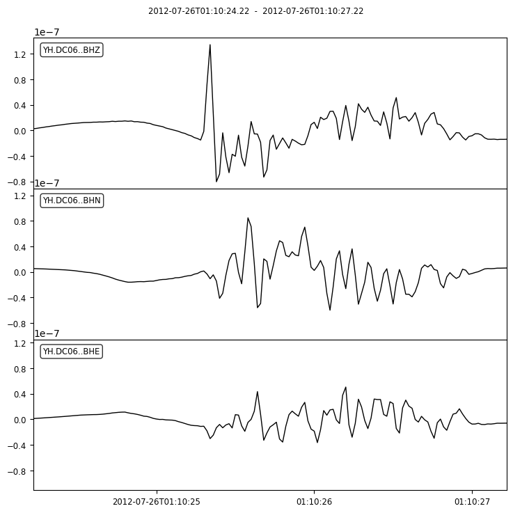
[49]:
_ = windows["s"].select(station="DC06").plot()
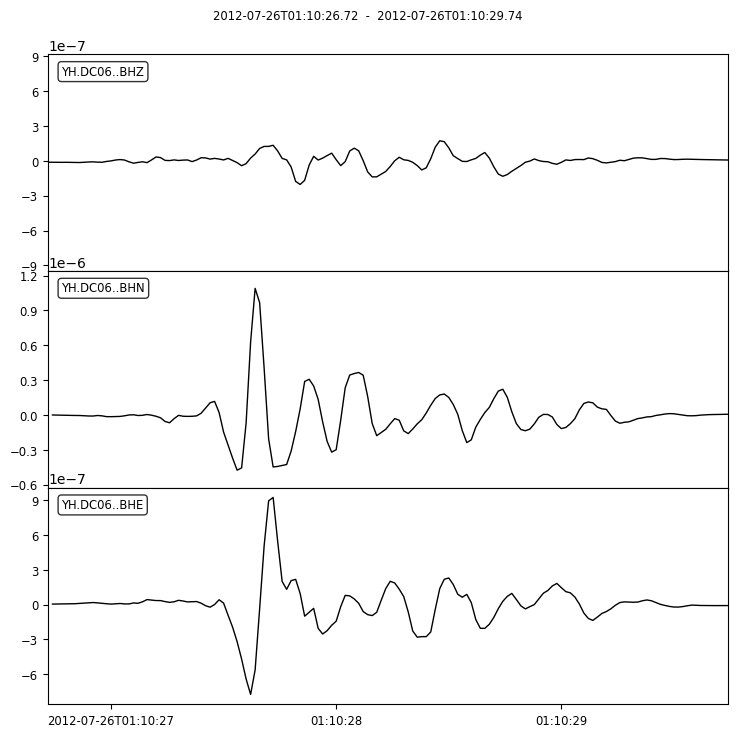
We can now compute the velocity spectra on each channel.
[50]:
spectrum = BPMF.spectrum.Spectrum(event=event)
spectrum.compute_spectrum(windows["noise"], "noise", alpha=0.15) # alpha is an argument for the taper function
spectrum.compute_spectrum(windows["p"], "p", alpha=0.15)
spectrum.compute_spectrum(windows["s"], "s", alpha=0.15)
spectrum.set_target_frequencies(FREQ_MIN_HZ, FREQ_MAX_HZ, NUM_FREQS)
spectrum.resample(spectrum.frequencies, spectrum.phases)
spectrum.compute_signal_to_noise_ratio("p")
spectrum.compute_signal_to_noise_ratio("s")
Let’s plot the velocity spectra and the signal-to-noise ratio (SNR) spectra.
[51]:
phase_to_plot = "s"
fig = spectrum.plot_spectrum(phase_to_plot, plot_snr=True)
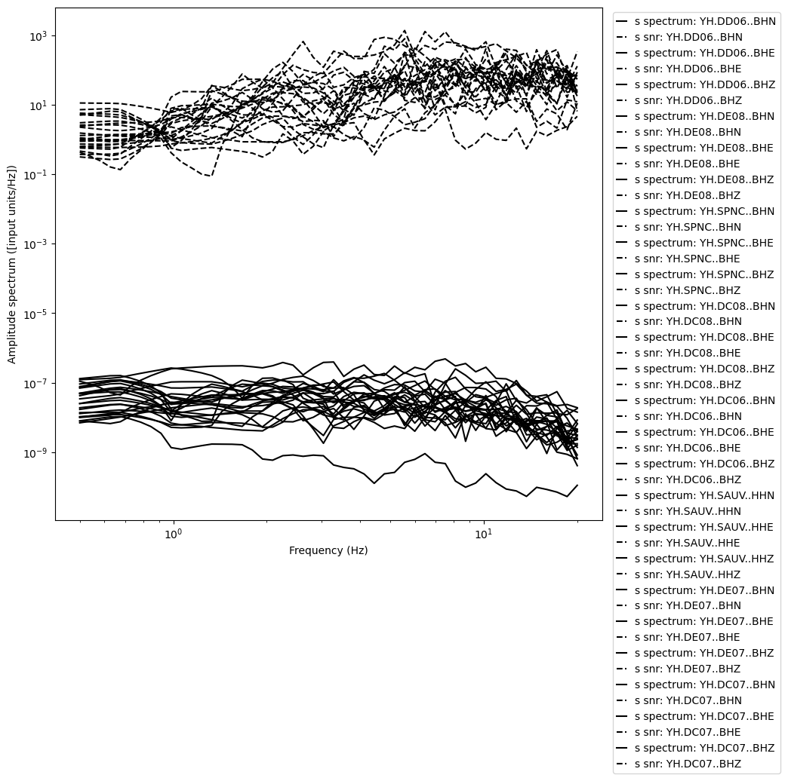
Before correcting for geometrical spreading, we need to build an attenuation model. In general, body-wave attenuation in the lithosphere is described by he quality factor \(Q\), which is related to frequency by (Aki, 1980):
To build a simple model of attenuation, we assume that \(Q^S = Q_0 f^n\) and that \(Q^P \approx \frac{3}{4} \left( v_P / v_S \right)^2 Q^S \approx 2.25 Q^S\). We search for an adequate value of \(Q_0\) and \(n\) in the literature. \(Q_0 = 33\) and \(n = 0.75\) reproduce reasonably well the curves shown in Izgi et al., 2020.
References:
Aki, K. (1980). Attenuation of shear-waves in the lithosphere for frequencies from 0.05 to 25 Hz. Physics of the Earth and Planetary Interiors, 21(1), 50-60.
Izgi, G., Eken, T., Gaebler, P., Eulenfeld, T., & Taymaz, T. (2020). Crustal seismic attenuation parameters in the western region of the North Anatolian Fault Zone. Journal of Geodynamics, 134, 101694.
[52]:
Q_1Hz = MEDIUM_PROPERTIES["Q_1HZ"]
n = MEDIUM_PROPERTIES["attenuation_n"]
Q = Q_1Hz * np.power(spectrum.frequencies, n)
[53]:
spectrum.set_Q_model(Q, spectrum.frequencies, Q_phase_prefactor={"p": 2.25, "s": 1.0})
spectrum.compute_correction_factor(
MEDIUM_PROPERTIES["rho_source_kgm3"],
MEDIUM_PROPERTIES["rho_receiver_kgm3"],
MEDIUM_PROPERTIES["vp_source_ms"],
MEDIUM_PROPERTIES["vp_receiver_ms"],
MEDIUM_PROPERTIES["vs_source_ms"],
MEDIUM_PROPERTIES["vs_receiver_ms"]
)
[54]:
# correct for propagation effects
spectrum.correct_geometrical_spreading()
spectrum.correct_attenuation()
[55]:
for phase_for_mag in ["p", "s"]:
spectrum.compute_network_average_spectrum(
phase_for_mag,
SNR_THRESHOLD,
min_num_valid_channels_per_freq_bin=MIN_NUM_VALID_CHANNELS_PER_FREQ_BIN,
max_relative_distance_err_pct=MAX_RELATIVE_DISTANCE_ERR_PCT,
verbose=1
)
# spectrum.integrate(phase_for_mag, average=True)
spectrum.fit_average_spectrum(
phase_for_mag,
model=SPECTRAL_MODEL,
min_fraction_valid_points_below_fc=MIN_FRACTION_VALID_POINTS_BELOW_FC,
# min_fraction_valid_points_below_fc=0.,
weighted=NUM_CHANNEL_WEIGHTED_FIT,
)
if spectrum.inversion_success:
rel_M0_err = 100.*spectrum.M0_err/spectrum.M0
rel_fc_err = 100.*spectrum.fc_err/spectrum.fc
print(f"Relative error on M0: {rel_M0_err:.2f}%")
print(f"Relative error on fc: {rel_fc_err:.2f}%")
# calculate stress drop
stress_drop_MPa = (
BPMF.spectrum.stress_drop_circular_crack(
spectrum.Mw, spectrum.fc, phase=phase_for_mag
)
/ 1.0e6
)
figtitle = (
f"{event.origin_time.strftime('%Y-%m-%dT%H:%M:%S')}: "
f"{event.latitude:.3f}"
"\u00b0"
f"N, {event.longitude:.3f}"
"\u00b0"
f"E, {event.depth:.1f}km,\n"
r"$\Delta M_0 / M_0=$"
f"{rel_M0_err:.1f}%, "
r"$\Delta f_c / f_c=$"
f"{rel_fc_err:.1f}%, "
f"$\Delta \sigma=$"
f"{stress_drop_MPa:.2f}"
)
fig = spectrum.plot_average_spectrum(
phase_for_mag,
plot_fit=True,
figname=f"{phase_for_mag}_spectrum_{EVENT_IDX}",
figtitle=figtitle,
figsize=(6, 6),
plot_std=True,
plot_num_valid_channels=True,
)
<>:41: SyntaxWarning: invalid escape sequence '\D'
<>:41: SyntaxWarning: invalid escape sequence '\D'
/tmp/ipykernel_212798/1022809922.py:41: SyntaxWarning: invalid escape sequence '\D'
f"$\Delta \sigma=$"
Relative error on M0: 6.44%
Relative error on fc: 7.16%
Relative error on M0: 4.48%
Relative error on fc: 3.80%
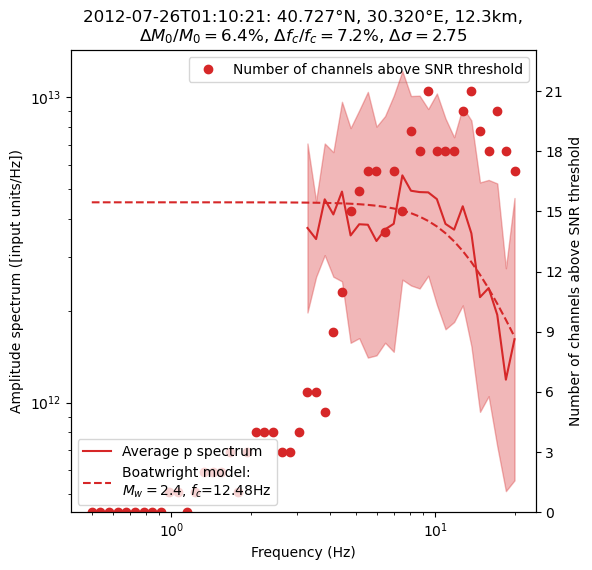
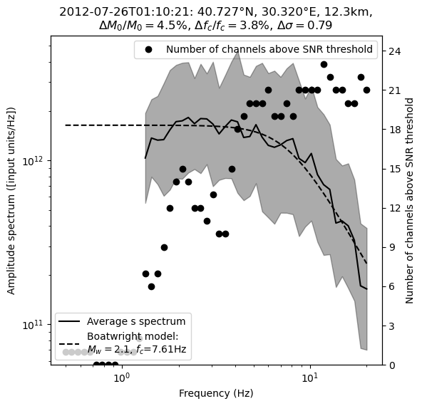
The significant discrepancy between the P- and S-wave estimates probably comes from the difficulty of separating P and S waves at short distances. Thus, it’s better to simply use the S-wave estimate.
In general, if one had good S-wave and P-wave spectra, one could produce a single final estimate of the moment magnitude \(M_w\) by averaging the P- and S-wave estimates:
Using the definition of the moment magnitude, we can derive the following formula for the magnitude error:
Method from Al-Ismail et al., 2022: Example with a single event
The Al-Ismail et al., 2022, study shows that a higher SNR displacement spectrum can estimated from the peak amplitude of the displacement waveform filtered in multiple frequency bands. This technique is especially interesting for the small magnitude earthquakes we are dealing with.
Reference:
Al‐Ismail, Fatimah, William L. Ellsworth, and Gregory C. Beroza. (2022) “A Time‐Domain Approach for Accurate Spectral Source Estimation with Application to Ridgecrest, California, Earthquakes.” Bulletin of the Seismological Society of America.
[56]:
# waveform extraction parameters
# BUFFER_SEC: duration, in sec, of time window taken before and after the window of interest
# which we need to avoid propagating the pre-filtering taper operation into our
# amplitude readings
BUFFER_SEC = 6.0
# OFFSET_PHASE: dictionary defining the time offset taken before a given phase
# for example OFFSET_PHASE["P"] = 1.0 means that we extract the window
# 1 second before the predicted P arrival time
OFFSET_PHASE = {"P": 0.25 + BUFFER_SEC, "S": 0.25 + BUFFER_SEC}
DURATION_SEC = 2.0 + 2.0 * BUFFER_SEC
OFFSET_OT_SEC_NOISE = DURATION_SEC
# multi-band-filtering parameters
FREQUENCY_BANDS = {
"0.5Hz-1.0Hz": [0.5, 1.0],
"1.0Hz-2.0Hz": [1.0, 2.0],
"2.0Hz-4.0Hz": [2.0, 4.0],
"4.0Hz-8.0Hz": [4.0, 8.0],
"8.0Hz-16.0Hz": [8.0, 16.0],
"16.0Hz-32.0Hz": [16.0, 32.0],
}
NUM_FREQS = 20
[57]:
def plot_filtered_traces(spectrum, station_name, noise_spectrum=None):
import fnmatch
tr_ids = fnmatch.filter(
list(spectrum.keys()), f"*{station_name}*"
)
num_channels = len(tr_ids)
if num_channels == 0:
print(f"Could not find {station_name}")
return
num_bands = len(spectrum[tr_ids[0]]["filtered_traces"])
fig, axes = plt.subplots(
num=f"filtered_traces_{station_name}",
ncols=num_channels,
nrows=num_bands,
figsize=(16, 3*num_bands)
)
for c, trid in enumerate(tr_ids):
axes[0, c].set_title(trid)
for i, band in enumerate(spectrum[tr_ids[0]]["filtered_traces"].keys()):
tr = spectrum[trid]["filtered_traces"][band]
axes[i, c].plot(
tr.times(),
tr.data,
)
axes[i, c].text(
0.02, 0.05, band, transform=axes[i, c].transAxes
)
if noise_spectrum is not None:
tr_n = noise_spectrum[trid]["filtered_traces"][band]
axes[i, c].plot(
tr_n.times(),
tr_n.data,
color="grey",
ls="--",
zorder=0.1,
)
axes[i, c].set_xlabel("Time (s)")
return fig
[58]:
EVENT_IDX = 12
event = events[EVENT_IDX]
print(f"The maximum horizontal location uncertainty of event {EVENT_IDX} is {event.hmax_unc:.2f}km.")
print(f"The minimum horizontal location uncertainty of event {EVENT_IDX} is {event.hmin_unc:.2f}km.")
print(f"The maximum vertical location uncertainty is {event.vmax_unc:.2f}km.")
The maximum horizontal location uncertainty of event 12 is 1.81km.
The minimum horizontal location uncertainty of event 12 is 1.49km.
The maximum vertical location uncertainty is 2.84km.
[59]:
windows = BPMF.spectrum.extract_windows(
event,
DURATION_SEC,
OFFSET_OT_SEC_NOISE,
DATA_FOLDER,
phase_on_comp_p=PHASE_ON_COMP_P,
phase_on_comp_s=PHASE_ON_COMP_S,
offset_phase=OFFSET_PHASE,
attach_response=ATTACH_RESPONSE,
cleanup_stream=None # see the documentation to learn about using a customized preprocessing function to remove some undesired traces (eg., clipped traces)
)
[60]:
# -----------------------------------------
# now, compute multi-band displacement spectra
# -----------------------------------------
spectrum = BPMF.spectrum.Spectrum(event=event)
spectrum.set_frequency_bands(FREQUENCY_BANDS)
spectrum.compute_multi_band_spectrum(
windows["noise"], "noise", BUFFER_SEC,
dev_mode=True
)
spectrum.compute_multi_band_spectrum(
windows["s"], "s", BUFFER_SEC,
dev_mode=True
)
spectrum.compute_multi_band_spectrum(
windows["p"], "p", BUFFER_SEC,
dev_mode=True
)
# attenuation model
Q_1Hz = MEDIUM_PROPERTIES["Q_1HZ"]
n = MEDIUM_PROPERTIES["attenuation_n"]
Q = Q_1Hz * np.power(spectrum.frequencies, n)
spectrum.set_Q_model(Q, spectrum.frequencies, Q_phase_prefactor={"p": 2.25, "s": 1.0})
spectrum.compute_correction_factor(
MEDIUM_PROPERTIES["rho_source_kgm3"],
MEDIUM_PROPERTIES["rho_receiver_kgm3"],
MEDIUM_PROPERTIES["vp_source_ms"],
MEDIUM_PROPERTIES["vp_receiver_ms"],
MEDIUM_PROPERTIES["vs_source_ms"],
MEDIUM_PROPERTIES["vs_receiver_ms"]
)
spectrum.set_target_frequencies(
spectrum.frequencies.min(),
spectrum.frequencies.max(),
NUM_FREQS
)
spectrum.resample(spectrum.frequencies, spectrum.phases)
# compute SNR
for phase_for_mag in ["p", "s"]:
spectrum.compute_signal_to_noise_ratio(phase_for_mag)
# correct for propagation effects
spectrum.correct_geometrical_spreading()
spectrum.correct_attenuation()
for phase_for_mag in ["p", "s"]:
spectrum.compute_network_average_spectrum(
phase_for_mag,
SNR_THRESHOLD,
min_num_valid_channels_per_freq_bin=MIN_NUM_VALID_CHANNELS_PER_FREQ_BIN,
max_relative_distance_err_pct=MAX_RELATIVE_DISTANCE_ERR_PCT,
)
spectrum.fit_average_spectrum(
phase_for_mag,
model=SPECTRAL_MODEL,
min_fraction_valid_points_below_fc=MIN_FRACTION_VALID_POINTS_BELOW_FC,
weighted=NUM_CHANNEL_WEIGHTED_FIT,
)
if spectrum.inversion_success:
rel_M0_err = 100.*spectrum.M0_err/spectrum.M0
rel_fc_err = 100.*spectrum.fc_err/spectrum.fc
print(f"Relative error on M0: {rel_M0_err:.2f}%")
print(f"Relative error on fc: {rel_fc_err:.2f}%")
# calculate stress drop
stress_drop_MPa = (
BPMF.spectrum.stress_drop_circular_crack(
spectrum.Mw, spectrum.fc, phase=phase_for_mag
)
/ 1.0e6
)
figtitle = (
f"{event.origin_time.strftime('%Y-%m-%dT%H:%M:%S')}: "
f"{event.latitude:.3f}"
"\u00b0"
f"N, {event.longitude:.3f}"
"\u00b0"
f"E, {event.depth:.1f}km,\n"
r"$\Delta M_0 / M_0=$"
f"{rel_M0_err:.1f}%, "
r"$\Delta f_c / f_c=$"
f"{rel_fc_err:.1f}%, "
f"$\Delta \sigma=$"
f"{stress_drop_MPa:.2f}"
)
fig = spectrum.plot_average_spectrum(
phase_for_mag,
plot_fit=True,
figname=f"{phase_for_mag}_spectrum_{event.id}",
figsize=(8, 8),
figtitle=figtitle,
plot_std=True,
plot_num_valid_channels=True,
)
<>:87: SyntaxWarning: invalid escape sequence '\D'
<>:87: SyntaxWarning: invalid escape sequence '\D'
/tmp/ipykernel_212798/3720531121.py:87: SyntaxWarning: invalid escape sequence '\D'
f"$\Delta \sigma=$"
Relative error on M0: 4.64%
Relative error on fc: 3.88%
Relative error on M0: 2.50%
Relative error on fc: 2.15%
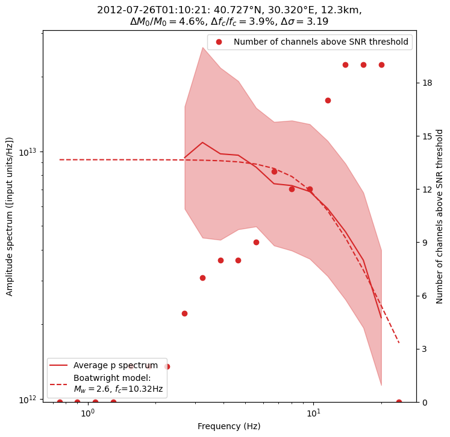
Have a look at the bandpass filtered displacement seismograms from which the spectrum was built:
[61]:
fig = plot_filtered_traces(
spectrum.s_spectrum, "DC06", noise_spectrum=spectrum.noise_spectrum
)
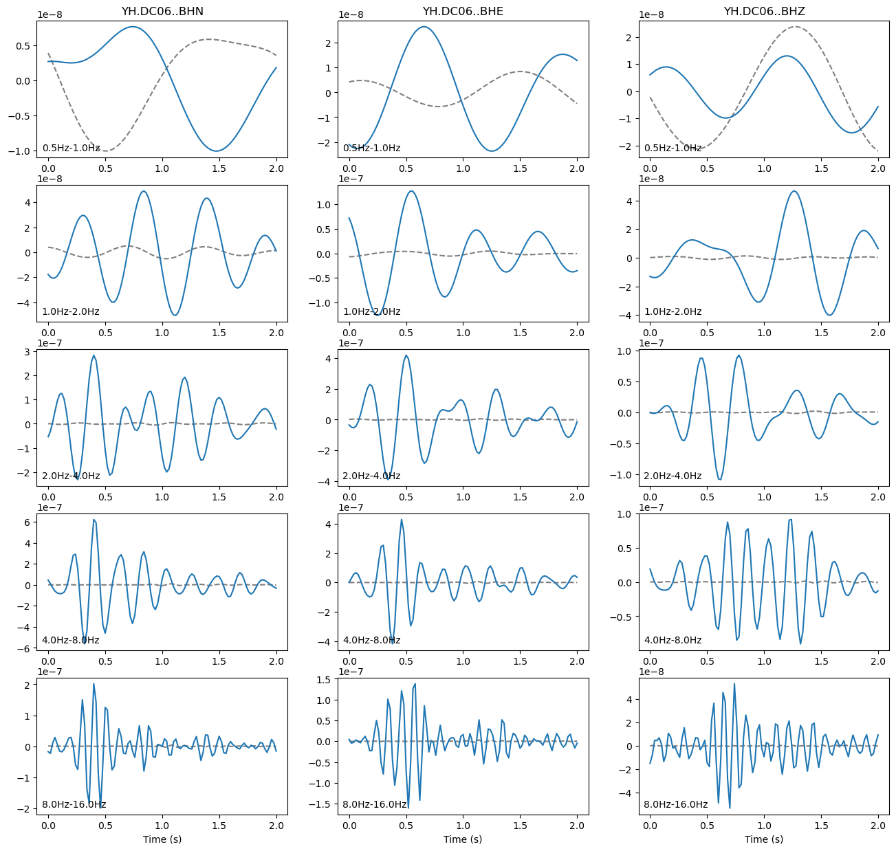
Using the Al-Ismail et al., 2022, technique procudes network-averaged displacement spectra that follows the Boatwright model very closely, therefore we prefer it, in general. However, note that the modeled S-wave spectra are very similar with both techniques.
Approximate moment magnitude
Prepare displacement spectra
First, compute the displacement spectra following of the above methods. In this example, we will use the peak-amplitude-based spectra method.
[62]:
# medium properties
VS_SOURCE_MS = 3500.0
VS_RECEIVER_MS = 2800.0
MEDIUM_PROPERTIES = {
"Q_1HZ": 33.,
"attenuation_n": 0.75,
"vs_source_ms": VS_SOURCE_MS,
"vp_source_ms": VS_SOURCE_MS * 1.72,
"rho_source_kgm3": 2700.,
"vs_receiver_ms": VS_RECEIVER_MS,
"vp_receiver_ms": VS_RECEIVER_MS * 1.72,
"rho_receiver_kgm3": 2600.,
}
# waveform extraction parameters
# PHASE_ON_COMP: dictionary defining which moveout we use to extract the waveform
PHASE_ON_COMP_S = {"N": "S", "1": "S", "E": "S", "2": "S", "Z": "S"}
PHASE_ON_COMP_P = {"N": "P", "1": "P", "E": "P", "2": "P", "Z": "P"}
DATA_FOLDER = "raw"
DATA_READER = data_reader_mseed
ATTACH_RESPONSE = True
# spectral inversion parameters
SPECTRAL_MODEL = "boatwright"
SNR_THRESHOLD = 10.
MIN_NUM_VALID_CHANNELS_PER_FREQ_BIN = 5
MIN_FRACTION_VALID_POINTS_BELOW_FC = 0.20
MAX_RELATIVE_DISTANCE_ERR_PCT = 33.
NUM_CHANNEL_WEIGHTED_FIT = True
[63]:
# waveform extraction parameters
# BUFFER_SEC: duration, in sec, of time window taken before and after the window of interest
# which we need to avoid propagating the pre-filtering taper operation into our
# amplitude readings
BUFFER_SEC = 6.0
# OFFSET_PHASE: dictionary defining the time offset taken before a given phase
# for example OFFSET_PHASE["P"] = 1.0 means that we extract the window
# 1 second before the predicted P arrival time
OFFSET_PHASE = {"P": 0.25 + BUFFER_SEC, "S": 0.25 + BUFFER_SEC}
DURATION_SEC = 2.0 + 2.0 * BUFFER_SEC
OFFSET_OT_SEC_NOISE = DURATION_SEC
# multi-band-filtering parameters
FREQUENCY_BANDS = {
"0.5Hz-1.0Hz": [0.5, 1.0],
"1.0Hz-2.0Hz": [1.0, 2.0],
"2.0Hz-4.0Hz": [2.0, 4.0],
"4.0Hz-8.0Hz": [4.0, 8.0],
"8.0Hz-16.0Hz": [8.0, 16.0],
"16.0Hz-32.0Hz": [16.0, 32.0],
}
NUM_FREQS = 20
[64]:
EVENT_IDX = 12
event = events[EVENT_IDX]
print(f"The maximum horizontal location uncertainty of event {EVENT_IDX} is {event.hmax_unc:.2f}km.")
print(f"The minimum horizontal location uncertainty of event {EVENT_IDX} is {event.hmin_unc:.2f}km.")
print(f"The maximum vertical location uncertainty is {event.vmax_unc:.2f}km.")
The maximum horizontal location uncertainty of event 12 is 1.81km.
The minimum horizontal location uncertainty of event 12 is 1.49km.
The maximum vertical location uncertainty is 2.84km.
[65]:
windows = BPMF.spectrum.extract_windows(
event,
DURATION_SEC,
OFFSET_OT_SEC_NOISE,
DATA_FOLDER,
phase_on_comp_p=PHASE_ON_COMP_P,
phase_on_comp_s=PHASE_ON_COMP_S,
offset_phase=OFFSET_PHASE,
attach_response=ATTACH_RESPONSE,
cleanup_stream=None # see the documentation to learn about using a customized preprocessing function to remove some undesired traces (eg., clipped traces)
)
[66]:
# -----------------------------------------
# now, compute multi-band displacement spectra
# -----------------------------------------
spectrum = BPMF.spectrum.Spectrum(event=event)
spectrum.set_frequency_bands(FREQUENCY_BANDS)
spectrum.compute_multi_band_spectrum(
windows["noise"], "noise", BUFFER_SEC,
)
spectrum.compute_multi_band_spectrum(
windows["s"], "s", BUFFER_SEC,
)
spectrum.compute_multi_band_spectrum(
windows["p"], "p", BUFFER_SEC,
)
# attenuation model
Q = MEDIUM_PROPERTIES["Q_1HZ"] * np.power(
spectrum.frequencies, MEDIUM_PROPERTIES["attenuation_n"]
)
spectrum.set_Q_model(Q, spectrum.frequencies, Q_phase_prefactor={"p": 2.25, "s": 1.0})
spectrum.compute_correction_factor(
MEDIUM_PROPERTIES["rho_source_kgm3"],
MEDIUM_PROPERTIES["rho_receiver_kgm3"],
MEDIUM_PROPERTIES["vp_source_ms"],
MEDIUM_PROPERTIES["vp_receiver_ms"],
MEDIUM_PROPERTIES["vs_source_ms"],
MEDIUM_PROPERTIES["vs_receiver_ms"]
)
spectrum.set_target_frequencies(
spectrum.frequencies.min(),
spectrum.frequencies.max(),
NUM_FREQS
)
spectrum.resample(spectrum.frequencies, spectrum.phases)
# compute SNR
for phase_for_mag in ["p", "s"]:
spectrum.compute_signal_to_noise_ratio(phase_for_mag)
# correct for propagation effects
spectrum.correct_geometrical_spreading()
spectrum.correct_attenuation()
Compute the approximate moment magnitude
[67]:
NUM_AVERAGING_BANDS = 3
LOW_SNR_FREQ_MIN_HZ = 2.0
MAGNITUDE_LOG_MOMENT_SCALING = 2. / 3.
[68]:
Mw_approx = BPMF.spectrum.approximate_moment_magnitude(
spectrum,
snr_threshold=SNR_THRESHOLD,
num_averaging_bands=NUM_AVERAGING_BANDS,
low_snr_freq_min_hz=LOW_SNR_FREQ_MIN_HZ,
magnitude_log_moment_scaling=MAGNITUDE_LOG_MOMENT_SCALING
)
S-wave: Approx. Mw: 2.10 (approx. log10 M0: 12.25)
P-wave: Approx. Mw: 2.47 (approx. log10 M0: 12.81)
Estimate a moment magnitude for every event using BPMF’s workflow function
Estimating the moment magnitude involves many steps: windowing, computing displacement, correcting for propagation, averaging, modeling. BPMF.spectrum.compute_moment_magnitude facilitates this process by serializing every element of the chain (check out its doc string for extra information).
[69]:
VS_SOURCE_MS = 3500.0
VS_RECEIVER_MS = 2800.0
MEDIUM_PROPERTIES = {
"Q_1HZ": 33.,
"attenuation_n": 0.75,
"vs_source_ms": VS_SOURCE_MS,
"vp_source_ms": VS_SOURCE_MS * 1.72,
"rho_source_kgm3": 2700.,
"vs_receiver_ms": VS_RECEIVER_MS,
"vp_receiver_ms": VS_RECEIVER_MS * 1.72,
"rho_receiver_kgm3": 2600.,
}
APPROXIMATE_MOMENT_MAGNITUDE_ARGS = {
"num_averaging_bands": 3,
"low_snr_freq_min_hz": 2.,
"magnitude_log_moment_scaling": 2. / 3.,
}
PHASE_ON_COMP_S = {"N": "S", "1": "S", "E": "S", "2": "S", "Z": "S"}
PHASE_ON_COMP_P = {"N": "P", "1": "P", "E": "P", "2": "P", "Z": "P"}
DATA_FOLDER = "raw"
DATA_READER = data_reader_mseed
ATTACH_RESPONSE = True
# spectral inversion parameters
SPECTRAL_MODEL = "boatwright"
SNR_THRESHOLD = 10.
MIN_NUM_VALID_CHANNELS_PER_FREQ_BIN = 5
MIN_FRACTION_VALID_POINTS_BELOW_FC = 0.20
MAX_RELATIVE_DISTANCE_ERR_PCT = 33.
NUM_CHANNEL_WEIGHTED_FIT = True
Method 1: Classic spectra
[70]:
# BUFFER_SEC: duration, in sec, of time window taken before and after the window of interest
# which we need to avoid propagating the pre-filtering taper operation into our
# amplitude readings
BUFFER_SEC = 0.5
# OFFSET_PHASE: dictionary defining the time offset taken before a given phase
# for example OFFSET_PHASE["P"] = 1.0 means that we extract the window
# 1 second before the predicted P arrival time
OFFSET_PHASE = {"P": 0.25 + BUFFER_SEC, "S": 0.25 + BUFFER_SEC}
DURATION_SEC = 2.0 + 2.0 * BUFFER_SEC
OFFSET_OT_SEC_NOISE = DURATION_SEC
FREQ_MIN_HZ = 0.5
FREQ_MAX_HZ = 20.
NUM_FREQS = 50
[71]:
for i, event in enumerate(events):
print("========================")
print(f"Processing event {i}")
windows = BPMF.spectrum.extract_windows(
event,
DURATION_SEC,
OFFSET_OT_SEC_NOISE,
DATA_FOLDER,
phase_on_comp_p=PHASE_ON_COMP_P,
phase_on_comp_s=PHASE_ON_COMP_S,
offset_phase=OFFSET_PHASE,
attach_response=ATTACH_RESPONSE,
)
(
spectrum, source_parameters, pathcorr_displacement_spectra, snr_spectra, figs
) = BPMF.spectrum.compute_moment_magnitude(
event,
windows,
method="regular",
phases=["noise", "p", "s"],
freq_min_hz=FREQ_MIN_HZ,
freq_max_hz=FREQ_MAX_HZ,
num_freqs=NUM_FREQS,
snr_threshold=SNR_THRESHOLD,
min_num_valid_channels_per_freq_bin=MIN_NUM_VALID_CHANNELS_PER_FREQ_BIN,
max_relative_distance_err_pct=MAX_RELATIVE_DISTANCE_ERR_PCT,
medium_properties=MEDIUM_PROPERTIES,
approximate_moment_magnitude_args=APPROXIMATE_MOMENT_MAGNITUDE_ARGS,
spectral_model=SPECTRAL_MODEL,
min_fraction_valid_points_below_fc=MIN_FRACTION_VALID_POINTS_BELOW_FC,
num_channel_weighted_fit=NUM_CHANNEL_WEIGHTED_FIT,
plot_spectrum=True,
plot_above_mw=1.5,
figsize=(8, 8),
full_output=True,
)
# attach inverted source parameters
event.set_aux_data(source_parameters)
========================
Processing event 0
P-wave: Approx. Mw: 1.79 (approx. log10 M0: 11.78)
S-wave: Approx. Mw: 1.44 (approx. log10 M0: 11.25)
Spectrum is below SNR threshold everywhere, cannot fit it.
Not enough valid points! (Only 20.00%)
========================
Processing event 1
P-wave: Approx. Mw: 1.44 (approx. log10 M0: 11.26)
S-wave: Approx. Mw: 1.30 (approx. log10 M0: 11.04)
Spectrum is below SNR threshold everywhere, cannot fit it.
Spectrum is below SNR threshold everywhere, cannot fit it.
========================
Processing event 2
P-wave: Approx. Mw: 1.86 (approx. log10 M0: 11.89)
S-wave: Approx. Mw: 1.17 (approx. log10 M0: 10.86)
Spectrum is below SNR threshold everywhere, cannot fit it.
Spectrum is below SNR threshold everywhere, cannot fit it.
========================
Processing event 3
P-wave: Approx. Mw: 2.07 (approx. log10 M0: 12.21)
S-wave: Approx. Mw: 1.35 (approx. log10 M0: 11.13)
Spectrum is below SNR threshold everywhere, cannot fit it.
Spectrum is below SNR threshold everywhere, cannot fit it.
========================
Processing event 4
P-wave: Approx. Mw: 1.63 (approx. log10 M0: 11.55)
S-wave: Approx. Mw: 1.37 (approx. log10 M0: 11.15)
========================
Processing event 5
P-wave: Approx. Mw: 1.63 (approx. log10 M0: 11.55)
S-wave: Approx. Mw: 1.26 (approx. log10 M0: 11.00)
Spectrum is below SNR threshold everywhere, cannot fit it.
Spectrum is below SNR threshold everywhere, cannot fit it.
========================
Processing event 6
P-wave: Approx. Mw: 1.87 (approx. log10 M0: 11.91)
S-wave: Approx. Mw: 1.47 (approx. log10 M0: 11.30)
Not enough valid points! (Only 18.00%)
Not enough valid points! (Only 46.00%)
========================
Processing event 7
P-wave: Approx. Mw: 1.85 (approx. log10 M0: 11.88)
S-wave: Approx. Mw: 1.34 (approx. log10 M0: 11.11)
Spectrum is below SNR threshold everywhere, cannot fit it.
Spectrum is below SNR threshold everywhere, cannot fit it.
========================
Processing event 8
P-wave: Approx. Mw: 2.34 (approx. log10 M0: 12.61)
S-wave: Approx. Mw: 1.98 (approx. log10 M0: 12.06)
Not enough valid points! (Only 48.00%)
-------------- S -------------
Relative error on M0: 3.64%
Relative error on fc: 3.09%
The P-S averaged moment magnitude is 2.04 +/- 0.02
========================
Processing event 9
P-wave: Approx. Mw: 1.79 (approx. log10 M0: 11.79)
S-wave: Approx. Mw: 1.33 (approx. log10 M0: 11.09)
Spectrum is below SNR threshold everywhere, cannot fit it.
Spectrum is below SNR threshold everywhere, cannot fit it.
========================
Processing event 10
P-wave: Approx. Mw: 2.30 (approx. log10 M0: 12.55)
S-wave: Approx. Mw: 1.93 (approx. log10 M0: 12.00)
-------------- P -------------
Relative error on M0: 5.42%
Relative error on fc: 5.47%
-------------- S -------------
Relative error on M0: 6.35%
Relative error on fc: 5.38%
The P-S averaged moment magnitude is 2.17 +/- 0.04
========================
Processing event 11
P-wave: Approx. Mw: 1.57 (approx. log10 M0: 11.46)
S-wave: Approx. Mw: 1.09 (approx. log10 M0: 10.73)
Spectrum is below SNR threshold everywhere, cannot fit it.
Spectrum is below SNR threshold everywhere, cannot fit it.
========================
Processing event 12
P-wave: Approx. Mw: 2.33 (approx. log10 M0: 12.60)
S-wave: Approx. Mw: 2.02 (approx. log10 M0: 12.12)
-------------- P -------------
Relative error on M0: 6.44%
Relative error on fc: 7.16%
-------------- S -------------
Relative error on M0: 4.48%
Relative error on fc: 3.80%
The P-S averaged moment magnitude is 2.22 +/- 0.04
========================
Processing event 13
P-wave: Approx. Mw: 1.49 (approx. log10 M0: 11.33)
S-wave: Approx. Mw: 0.97 (approx. log10 M0: 10.55)
Spectrum is below SNR threshold everywhere, cannot fit it.
Spectrum is below SNR threshold everywhere, cannot fit it.
========================
Processing event 14
P-wave: Approx. Mw: 1.52 (approx. log10 M0: 11.38)
S-wave: Approx. Mw: 1.38 (approx. log10 M0: 11.17)
Not enough valid points! (Only 2.00%)
Not enough valid points! (Only 20.00%)
========================
Processing event 15
P-wave: Approx. Mw: 1.66 (approx. log10 M0: 11.59)
S-wave: Approx. Mw: 1.09 (approx. log10 M0: 10.73)
========================
Processing event 16
P-wave: Approx. Mw: 1.95 (approx. log10 M0: 12.03)
S-wave: Approx. Mw: 1.13 (approx. log10 M0: 10.80)
========================
Processing event 17
P-wave: Approx. Mw: 2.03 (approx. log10 M0: 12.14)
S-wave: Approx. Mw: 1.42 (approx. log10 M0: 11.22)
========================
Processing event 18
P-wave: Approx. Mw: 1.64 (approx. log10 M0: 11.56)
S-wave: Approx. Mw: 1.10 (approx. log10 M0: 10.76)
========================
Processing event 19
P-wave: Approx. Mw: 1.67 (approx. log10 M0: 11.60)
S-wave: Approx. Mw: 1.38 (approx. log10 M0: 11.17)
========================
Processing event 20
P-wave: Approx. Mw: 1.63 (approx. log10 M0: 11.54)
S-wave: Approx. Mw: 1.24 (approx. log10 M0: 10.96)
========================
Processing event 21
P-wave: Approx. Mw: 1.57 (approx. log10 M0: 11.45)
S-wave: Approx. Mw: 1.10 (approx. log10 M0: 10.75)
========================
Processing event 22
P-wave: Approx. Mw: 1.66 (approx. log10 M0: 11.58)
S-wave: Approx. Mw: 1.40 (approx. log10 M0: 11.20)
Spectrum is below SNR threshold everywhere, cannot fit it.
Not enough valid points! (Only 2.00%)
========================
Processing event 23
P-wave: Approx. Mw: 1.59 (approx. log10 M0: 11.48)
S-wave: Approx. Mw: 1.08 (approx. log10 M0: 10.72)
Spectrum is below SNR threshold everywhere, cannot fit it.
Spectrum is below SNR threshold everywhere, cannot fit it.
========================
Processing event 24
P-wave: Approx. Mw: 1.38 (approx. log10 M0: 11.18)
S-wave: Approx. Mw: 1.21 (approx. log10 M0: 10.91)
Spectrum is below SNR threshold everywhere, cannot fit it.
Spectrum is below SNR threshold everywhere, cannot fit it.
========================
Processing event 25
P-wave: Approx. Mw: 1.95 (approx. log10 M0: 12.02)
S-wave: Approx. Mw: 1.23 (approx. log10 M0: 10.94)
Spectrum is below SNR threshold everywhere, cannot fit it.
Spectrum is below SNR threshold everywhere, cannot fit it.
========================
Processing event 26
P-wave: Approx. Mw: 1.64 (approx. log10 M0: 11.56)
S-wave: Approx. Mw: 1.09 (approx. log10 M0: 10.73)
Spectrum is below SNR threshold everywhere, cannot fit it.
Spectrum is below SNR threshold everywhere, cannot fit it.
========================
Processing event 27
P-wave: Approx. Mw: 1.80 (approx. log10 M0: 11.79)
S-wave: Approx. Mw: 1.38 (approx. log10 M0: 11.16)
Spectrum is below SNR threshold everywhere, cannot fit it.
Spectrum is below SNR threshold everywhere, cannot fit it.
========================
Processing event 28
P-wave: Approx. Mw: 1.78 (approx. log10 M0: 11.77)
S-wave: Approx. Mw: 1.10 (approx. log10 M0: 10.74)
Spectrum is below SNR threshold everywhere, cannot fit it.
Spectrum is below SNR threshold everywhere, cannot fit it.
========================
Processing event 29
P-wave: Approx. Mw: 1.59 (approx. log10 M0: 11.48)
S-wave: Approx. Mw: 1.11 (approx. log10 M0: 10.77)
Spectrum is below SNR threshold everywhere, cannot fit it.
Spectrum is below SNR threshold everywhere, cannot fit it.
========================
Processing event 30
P-wave: Approx. Mw: 2.05 (approx. log10 M0: 12.18)
S-wave: Approx. Mw: 1.82 (approx. log10 M0: 11.83)
========================
Processing event 31
P-wave: Approx. Mw: 1.67 (approx. log10 M0: 11.61)
S-wave: Approx. Mw: 1.06 (approx. log10 M0: 10.69)
Spectrum is below SNR threshold everywhere, cannot fit it.
Spectrum is below SNR threshold everywhere, cannot fit it.
========================
Processing event 32
P-wave: Approx. Mw: 1.55 (approx. log10 M0: 11.43)
S-wave: Approx. Mw: 1.04 (approx. log10 M0: 10.66)
Spectrum is below SNR threshold everywhere, cannot fit it.
Spectrum is below SNR threshold everywhere, cannot fit it.
========================
Processing event 33
P-wave: Approx. Mw: 1.75 (approx. log10 M0: 11.73)
S-wave: Approx. Mw: 1.28 (approx. log10 M0: 11.01)
Spectrum is below SNR threshold everywhere, cannot fit it.
Spectrum is below SNR threshold everywhere, cannot fit it.
========================
Processing event 34
P-wave: Approx. Mw: 2.73 (approx. log10 M0: 13.20)
S-wave: Approx. Mw: 1.90 (approx. log10 M0: 11.96)
Spectrum is below SNR threshold everywhere, cannot fit it.
Spectrum is below SNR threshold everywhere, cannot fit it.
========================
Processing event 35
P-wave: Approx. Mw: 1.72 (approx. log10 M0: 11.68)
S-wave: Approx. Mw: 1.81 (approx. log10 M0: 11.81)
Spectrum is below SNR threshold everywhere, cannot fit it.
Spectrum is below SNR threshold everywhere, cannot fit it.
========================
Processing event 36
P-wave: Approx. Mw: 2.21 (approx. log10 M0: 12.41)
S-wave: Approx. Mw: 1.80 (approx. log10 M0: 11.81)
Not enough valid points! (Only 26.00%)
-------------- S -------------
Relative error on M0: 6.31%
Relative error on fc: 4.97%
The P-S averaged moment magnitude is 1.87 +/- 0.04
========================
Processing event 37
P-wave: Approx. Mw: 2.00 (approx. log10 M0: 12.11)
S-wave: Approx. Mw: 1.40 (approx. log10 M0: 11.19)
Spectrum is below SNR threshold everywhere, cannot fit it.
Spectrum is below SNR threshold everywhere, cannot fit it.
========================
Processing event 38
P-wave: Approx. Mw: 2.11 (approx. log10 M0: 12.26)
S-wave: Approx. Mw: 1.14 (approx. log10 M0: 10.81)
Spectrum is below SNR threshold everywhere, cannot fit it.
Spectrum is below SNR threshold everywhere, cannot fit it.
========================
Processing event 39
P-wave: Approx. Mw: 1.96 (approx. log10 M0: 12.04)
S-wave: Approx. Mw: 1.52 (approx. log10 M0: 11.39)
Spectrum is below SNR threshold everywhere, cannot fit it.
Spectrum is below SNR threshold everywhere, cannot fit it.
========================
Processing event 40
P-wave: Approx. Mw: 2.17 (approx. log10 M0: 12.36)
S-wave: Approx. Mw: 1.61 (approx. log10 M0: 11.51)
Spectrum is below SNR threshold everywhere, cannot fit it.
Spectrum is below SNR threshold everywhere, cannot fit it.
========================
Processing event 41
P-wave: Approx. Mw: 1.59 (approx. log10 M0: 11.48)
S-wave: Approx. Mw: 0.98 (approx. log10 M0: 10.57)
Spectrum is below SNR threshold everywhere, cannot fit it.
Spectrum is below SNR threshold everywhere, cannot fit it.
========================
Processing event 42
P-wave: Approx. Mw: 1.85 (approx. log10 M0: 11.88)
S-wave: Approx. Mw: 1.17 (approx. log10 M0: 10.85)
Spectrum is below SNR threshold everywhere, cannot fit it.
Spectrum is below SNR threshold everywhere, cannot fit it.
========================
Processing event 43
P-wave: Approx. Mw: 1.78 (approx. log10 M0: 11.77)
S-wave: Approx. Mw: 1.13 (approx. log10 M0: 10.79)
Spectrum is below SNR threshold everywhere, cannot fit it.
Spectrum is below SNR threshold everywhere, cannot fit it.
========================
Processing event 44
P-wave: Approx. Mw: 1.92 (approx. log10 M0: 11.98)
S-wave: Approx. Mw: 1.02 (approx. log10 M0: 10.63)
Spectrum is below SNR threshold everywhere, cannot fit it.
Spectrum is below SNR threshold everywhere, cannot fit it.
========================
Processing event 45
P-wave: Approx. Mw: 1.99 (approx. log10 M0: 12.09)
S-wave: Approx. Mw: 1.64 (approx. log10 M0: 11.56)
Spectrum is below SNR threshold everywhere, cannot fit it.
Spectrum is below SNR threshold everywhere, cannot fit it.
========================
Processing event 46
P-wave: Approx. Mw: 1.85 (approx. log10 M0: 11.87)
S-wave: Approx. Mw: 1.25 (approx. log10 M0: 10.97)
Spectrum is below SNR threshold everywhere, cannot fit it.
Spectrum is below SNR threshold everywhere, cannot fit it.
========================
Processing event 47
P-wave: Approx. Mw: 1.66 (approx. log10 M0: 11.59)
S-wave: Approx. Mw: 1.31 (approx. log10 M0: 11.07)
Spectrum is below SNR threshold everywhere, cannot fit it.
Spectrum is below SNR threshold everywhere, cannot fit it.
========================
Processing event 48
P-wave: Approx. Mw: 1.60 (approx. log10 M0: 11.50)
S-wave: Approx. Mw: 1.26 (approx. log10 M0: 11.00)
Spectrum is below SNR threshold everywhere, cannot fit it.
Spectrum is below SNR threshold everywhere, cannot fit it.
========================
Processing event 49
P-wave: Approx. Mw: 2.04 (approx. log10 M0: 12.16)
S-wave: Approx. Mw: 1.61 (approx. log10 M0: 11.52)
Spectrum is below SNR threshold everywhere, cannot fit it.
Not enough valid points! (Only 26.00%)
========================
Processing event 50
P-wave: Approx. Mw: 2.31 (approx. log10 M0: 12.56)
S-wave: Approx. Mw: 1.78 (approx. log10 M0: 11.77)
Not enough valid points! (Only 10.00%)
Not enough valid points! (Only 40.00%)
========================
Processing event 51
P-wave: Approx. Mw: 1.92 (approx. log10 M0: 11.99)
S-wave: Approx. Mw: 1.34 (approx. log10 M0: 11.10)
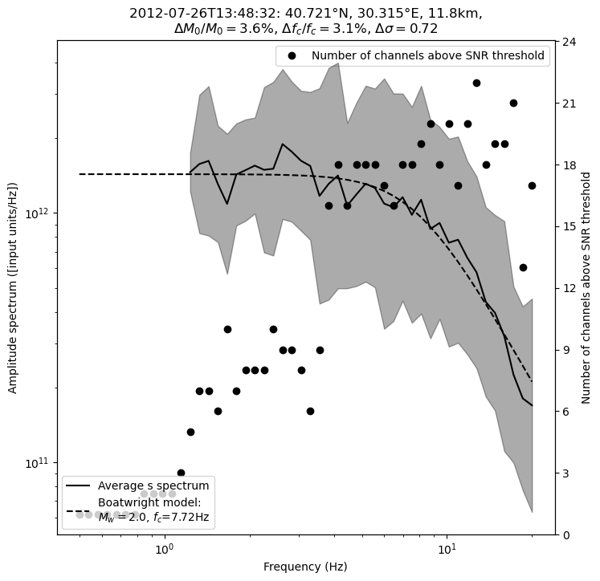
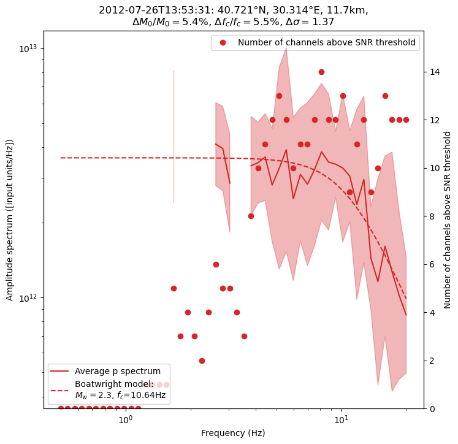
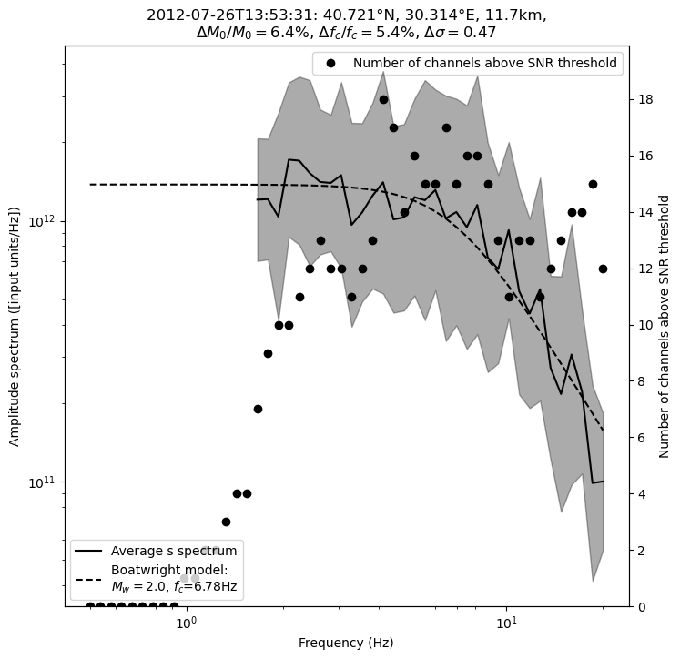
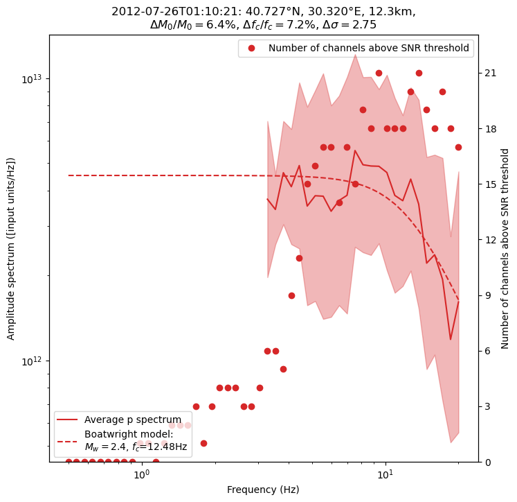
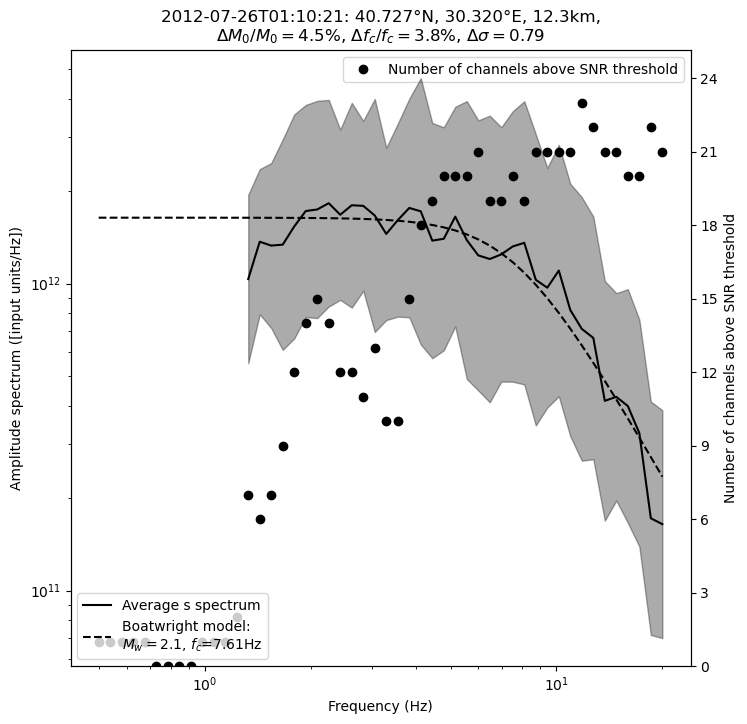
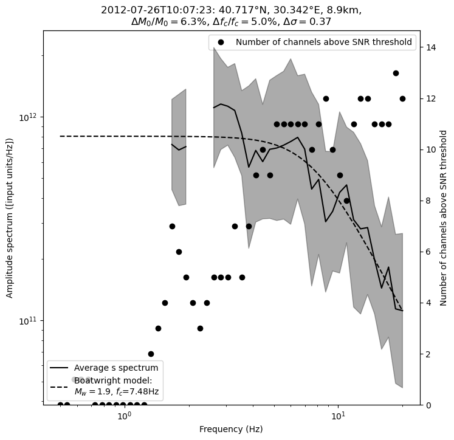
Method 2: Peak-amplitude-based spectra (Al-Ismail et al., 2022)
[72]:
# waveform extraction parameters
BUFFER_SEC = 6.0
OFFSET_PHASE = {"P": 0.5 + BUFFER_SEC, "S": 0.5 + BUFFER_SEC}
DURATION_SEC = 2.0 + 2.0 * BUFFER_SEC
OFFSET_OT_SEC_NOISE = DURATION_SEC
# multi-band-filtering parameters
FREQUENCY_BANDS = {
"0.5Hz-1.0Hz": [0.5, 1.0],
"1.0Hz-2.0Hz": [1.0, 2.0],
"2.0Hz-4.0Hz": [2.0, 4.0],
"4.0Hz-8.0Hz": [4.0, 8.0],
"8.0Hz-16.0Hz": [8.0, 16.0],
"16.0Hz-32.0Hz": [16.0, 32.0],
}
NUM_FREQS = 20
[73]:
for i, event in enumerate(events):
print("========================")
print(f"Processing event {i}")
windows = BPMF.spectrum.extract_windows(
event,
DURATION_SEC,
OFFSET_OT_SEC_NOISE,
DATA_FOLDER,
phase_on_comp_p=PHASE_ON_COMP_P,
phase_on_comp_s=PHASE_ON_COMP_S,
offset_phase=OFFSET_PHASE,
attach_response=ATTACH_RESPONSE,
)
(
spectrum, source_parameters, pathcorr_displacement_spectra, snr_spectra, figs
) = BPMF.spectrum.compute_moment_magnitude(
event,
windows,
method="multiband",
phases=["noise", "p", "s"],
frequency_bands=FREQUENCY_BANDS,
num_freqs=NUM_FREQS,
window_buffer_sec=BUFFER_SEC,
snr_threshold=SNR_THRESHOLD,
min_num_valid_channels_per_freq_bin=MIN_NUM_VALID_CHANNELS_PER_FREQ_BIN,
max_relative_distance_err_pct=MAX_RELATIVE_DISTANCE_ERR_PCT,
medium_properties=MEDIUM_PROPERTIES,
approximate_moment_magnitude_args=APPROXIMATE_MOMENT_MAGNITUDE_ARGS,
spectral_model=SPECTRAL_MODEL,
min_fraction_valid_points_below_fc=MIN_FRACTION_VALID_POINTS_BELOW_FC,
num_channel_weighted_fit=NUM_CHANNEL_WEIGHTED_FIT,
plot_spectrum=True,
plot_above_mw=1.5,
figsize=(8, 8),
full_output=True,
)
# attach inverted source parameters
event.set_aux_data(source_parameters)
========================
Processing event 0
P-wave: Approx. Mw: 1.61 (approx. log10 M0: 11.52)
S-wave: Approx. Mw: 1.53 (approx. log10 M0: 11.40)
Spectrum is below SNR threshold everywhere, cannot fit it.
Not enough valid points! (Only 30.00%)
========================
Processing event 1
P-wave: Approx. Mw: 1.53 (approx. log10 M0: 11.39)
S-wave: Approx. Mw: 1.19 (approx. log10 M0: 10.89)
Spectrum is below SNR threshold everywhere, cannot fit it.
Spectrum is below SNR threshold everywhere, cannot fit it.
========================
Processing event 2
P-wave: Approx. Mw: 1.75 (approx. log10 M0: 11.73)
S-wave: Approx. Mw: 1.20 (approx. log10 M0: 10.91)
Spectrum is below SNR threshold everywhere, cannot fit it.
Spectrum is below SNR threshold everywhere, cannot fit it.
========================
Processing event 3
P-wave: Approx. Mw: 2.03 (approx. log10 M0: 12.14)
S-wave: Approx. Mw: 1.62 (approx. log10 M0: 11.53)
Not enough valid points! (Only 20.00%)
Not enough valid points! (Only 35.00%)
========================
Processing event 4
P-wave: Approx. Mw: 1.55 (approx. log10 M0: 11.43)
S-wave: Approx. Mw: 1.33 (approx. log10 M0: 11.10)
========================
Processing event 5
P-wave: Approx. Mw: 1.70 (approx. log10 M0: 11.64)
S-wave: Approx. Mw: 1.12 (approx. log10 M0: 10.78)
Spectrum is below SNR threshold everywhere, cannot fit it.
Spectrum is below SNR threshold everywhere, cannot fit it.
========================
Processing event 6
P-wave: Approx. Mw: 1.70 (approx. log10 M0: 11.65)
S-wave: Approx. Mw: 1.52 (approx. log10 M0: 11.38)
Not enough valid points! (Only 20.00%)
-------------- S -------------
Relative error on M0: 7.68%
Relative error on fc: 5.20%
The P-S averaged moment magnitude is 1.73 +/- 0.05
========================
Processing event 7
P-wave: Approx. Mw: 1.96 (approx. log10 M0: 12.03)
S-wave: Approx. Mw: 1.21 (approx. log10 M0: 10.91)
Spectrum is below SNR threshold everywhere, cannot fit it.
Spectrum is below SNR threshold everywhere, cannot fit it.
========================
Processing event 8
P-wave: Approx. Mw: 2.39 (approx. log10 M0: 12.69)
S-wave: Approx. Mw: 2.10 (approx. log10 M0: 12.26)
Not enough valid points! (Only 40.00%)
-------------- S -------------
Relative error on M0: 4.47%
Relative error on fc: 3.79%
The P-S averaged moment magnitude is 2.18 +/- 0.03
========================
Processing event 9
P-wave: Approx. Mw: 1.59 (approx. log10 M0: 11.48)
S-wave: Approx. Mw: 1.16 (approx. log10 M0: 10.84)
Spectrum is below SNR threshold everywhere, cannot fit it.
Spectrum is below SNR threshold everywhere, cannot fit it.
========================
Processing event 10
P-wave: Approx. Mw: 2.31 (approx. log10 M0: 12.56)
S-wave: Approx. Mw: 2.12 (approx. log10 M0: 12.28)
Not enough valid points! (Only 40.00%)
-------------- S -------------
Relative error on M0: 2.81%
Relative error on fc: 2.58%
The P-S averaged moment magnitude is 2.15 +/- 0.02
========================
Processing event 11
P-wave: Approx. Mw: 1.69 (approx. log10 M0: 11.63)
S-wave: Approx. Mw: 1.21 (approx. log10 M0: 10.92)
Spectrum is below SNR threshold everywhere, cannot fit it.
Spectrum is below SNR threshold everywhere, cannot fit it.
========================
Processing event 12
P-wave: Approx. Mw: 2.39 (approx. log10 M0: 12.69)
S-wave: Approx. Mw: 2.10 (approx. log10 M0: 12.25)
-------------- P -------------
Relative error on M0: 6.37%
Relative error on fc: 5.57%
-------------- S -------------
Relative error on M0: 2.47%
Relative error on fc: 2.11%
The P-S averaged moment magnitude is 2.33 +/- 0.03
========================
Processing event 13
P-wave: Approx. Mw: 1.61 (approx. log10 M0: 11.51)
S-wave: Approx. Mw: 1.10 (approx. log10 M0: 10.75)
Spectrum is below SNR threshold everywhere, cannot fit it.
Spectrum is below SNR threshold everywhere, cannot fit it.
========================
Processing event 14
P-wave: Approx. Mw: 1.63 (approx. log10 M0: 11.55)
S-wave: Approx. Mw: 1.39 (approx. log10 M0: 11.19)
Spectrum is below SNR threshold everywhere, cannot fit it.
Not enough valid points! (Only 20.00%)
========================
Processing event 15
P-wave: Approx. Mw: 1.64 (approx. log10 M0: 11.56)
S-wave: Approx. Mw: 1.39 (approx. log10 M0: 11.18)
========================
Processing event 16
P-wave: Approx. Mw: 1.50 (approx. log10 M0: 11.35)
S-wave: Approx. Mw: 1.00 (approx. log10 M0: 10.59)
========================
Processing event 17
P-wave: Approx. Mw: 1.62 (approx. log10 M0: 11.53)
S-wave: Approx. Mw: 1.34 (approx. log10 M0: 11.11)
========================
Processing event 18
P-wave: Approx. Mw: 1.44 (approx. log10 M0: 11.27)
S-wave: Approx. Mw: 1.28 (approx. log10 M0: 11.02)
========================
Processing event 19
P-wave: Approx. Mw: 1.86 (approx. log10 M0: 11.89)
S-wave: Approx. Mw: 1.29 (approx. log10 M0: 11.04)
========================
Processing event 20
P-wave: Approx. Mw: 1.53 (approx. log10 M0: 11.40)
S-wave: Approx. Mw: 1.33 (approx. log10 M0: 11.10)
========================
Processing event 21
P-wave: Approx. Mw: 1.59 (approx. log10 M0: 11.49)
S-wave: Approx. Mw: 1.02 (approx. log10 M0: 10.62)
========================
Processing event 22
P-wave: Approx. Mw: 1.69 (approx. log10 M0: 11.63)
S-wave: Approx. Mw: 1.22 (approx. log10 M0: 10.93)
Spectrum is below SNR threshold everywhere, cannot fit it.
Spectrum is below SNR threshold everywhere, cannot fit it.
========================
Processing event 23
P-wave: Approx. Mw: 1.52 (approx. log10 M0: 11.38)
S-wave: Approx. Mw: 1.25 (approx. log10 M0: 10.98)
Spectrum is below SNR threshold everywhere, cannot fit it.
Spectrum is below SNR threshold everywhere, cannot fit it.
========================
Processing event 24
P-wave: Approx. Mw: 1.47 (approx. log10 M0: 11.31)
S-wave: Approx. Mw: 1.15 (approx. log10 M0: 10.83)
Spectrum is below SNR threshold everywhere, cannot fit it.
Spectrum is below SNR threshold everywhere, cannot fit it.
========================
Processing event 25
P-wave: Approx. Mw: 1.75 (approx. log10 M0: 11.72)
S-wave: Approx. Mw: 1.00 (approx. log10 M0: 10.60)
Spectrum is below SNR threshold everywhere, cannot fit it.
Spectrum is below SNR threshold everywhere, cannot fit it.
========================
Processing event 26
P-wave: Approx. Mw: 1.75 (approx. log10 M0: 11.72)
S-wave: Approx. Mw: 1.27 (approx. log10 M0: 11.00)
Spectrum is below SNR threshold everywhere, cannot fit it.
Spectrum is below SNR threshold everywhere, cannot fit it.
========================
Processing event 27
P-wave: Approx. Mw: 1.88 (approx. log10 M0: 11.93)
S-wave: Approx. Mw: 1.25 (approx. log10 M0: 10.97)
Spectrum is below SNR threshold everywhere, cannot fit it.
Spectrum is below SNR threshold everywhere, cannot fit it.
========================
Processing event 28
P-wave: Approx. Mw: 1.95 (approx. log10 M0: 12.02)
S-wave: Approx. Mw: 1.21 (approx. log10 M0: 10.92)
Spectrum is below SNR threshold everywhere, cannot fit it.
Spectrum is below SNR threshold everywhere, cannot fit it.
========================
Processing event 29
P-wave: Approx. Mw: 1.60 (approx. log10 M0: 11.50)
S-wave: Approx. Mw: 1.15 (approx. log10 M0: 10.82)
Spectrum is below SNR threshold everywhere, cannot fit it.
Spectrum is below SNR threshold everywhere, cannot fit it.
========================
Processing event 30
P-wave: Approx. Mw: 1.96 (approx. log10 M0: 12.04)
S-wave: Approx. Mw: 1.94 (approx. log10 M0: 12.01)
========================
Processing event 31
P-wave: Approx. Mw: 1.93 (approx. log10 M0: 12.00)
S-wave: Approx. Mw: 1.35 (approx. log10 M0: 11.13)
Spectrum is below SNR threshold everywhere, cannot fit it.
Spectrum is below SNR threshold everywhere, cannot fit it.
========================
Processing event 32
P-wave: Approx. Mw: 1.91 (approx. log10 M0: 11.97)
S-wave: Approx. Mw: 1.20 (approx. log10 M0: 10.89)
Spectrum is below SNR threshold everywhere, cannot fit it.
Spectrum is below SNR threshold everywhere, cannot fit it.
========================
Processing event 33
P-wave: Approx. Mw: 2.07 (approx. log10 M0: 12.21)
S-wave: Approx. Mw: 1.28 (approx. log10 M0: 11.01)
Spectrum is below SNR threshold everywhere, cannot fit it.
Spectrum is below SNR threshold everywhere, cannot fit it.
========================
Processing event 34
P-wave: Approx. Mw: 2.52 (approx. log10 M0: 12.89)
S-wave: Approx. Mw: 1.98 (approx. log10 M0: 12.07)
Spectrum is below SNR threshold everywhere, cannot fit it.
Spectrum is below SNR threshold everywhere, cannot fit it.
========================
Processing event 35
P-wave: Approx. Mw: 1.95 (approx. log10 M0: 12.02)
S-wave: Approx. Mw: 1.21 (approx. log10 M0: 10.91)
Spectrum is below SNR threshold everywhere, cannot fit it.
Spectrum is below SNR threshold everywhere, cannot fit it.
========================
Processing event 36
P-wave: Approx. Mw: 2.27 (approx. log10 M0: 12.50)
S-wave: Approx. Mw: 1.88 (approx. log10 M0: 11.93)
Not enough valid points! (Only 25.00%)
-------------- S -------------
Relative error on M0: 6.89%
Relative error on fc: 4.53%
The P-S averaged moment magnitude is 2.07 +/- 0.05
========================
Processing event 37
P-wave: Approx. Mw: 1.90 (approx. log10 M0: 11.95)
S-wave: Approx. Mw: 1.31 (approx. log10 M0: 11.06)
Spectrum is below SNR threshold everywhere, cannot fit it.
Spectrum is below SNR threshold everywhere, cannot fit it.
========================
Processing event 38
P-wave: Approx. Mw: 1.73 (approx. log10 M0: 11.70)
S-wave: Approx. Mw: 0.99 (approx. log10 M0: 10.58)
Spectrum is below SNR threshold everywhere, cannot fit it.
Spectrum is below SNR threshold everywhere, cannot fit it.
========================
Processing event 39
P-wave: Approx. Mw: 1.69 (approx. log10 M0: 11.63)
S-wave: Approx. Mw: 1.18 (approx. log10 M0: 10.88)
Spectrum is below SNR threshold everywhere, cannot fit it.
Spectrum is below SNR threshold everywhere, cannot fit it.
========================
Processing event 40
P-wave: Approx. Mw: 2.17 (approx. log10 M0: 12.35)
S-wave: Approx. Mw: 1.66 (approx. log10 M0: 11.60)
Spectrum is below SNR threshold everywhere, cannot fit it.
Spectrum is below SNR threshold everywhere, cannot fit it.
========================
Processing event 41
P-wave: Approx. Mw: 1.63 (approx. log10 M0: 11.55)
S-wave: Approx. Mw: 1.18 (approx. log10 M0: 10.87)
Spectrum is below SNR threshold everywhere, cannot fit it.
Spectrum is below SNR threshold everywhere, cannot fit it.
========================
Processing event 42
P-wave: Approx. Mw: 1.62 (approx. log10 M0: 11.52)
S-wave: Approx. Mw: 1.10 (approx. log10 M0: 10.75)
Spectrum is below SNR threshold everywhere, cannot fit it.
Spectrum is below SNR threshold everywhere, cannot fit it.
========================
Processing event 43
P-wave: Approx. Mw: 1.77 (approx. log10 M0: 11.75)
S-wave: Approx. Mw: 0.98 (approx. log10 M0: 10.57)
Spectrum is below SNR threshold everywhere, cannot fit it.
Spectrum is below SNR threshold everywhere, cannot fit it.
========================
Processing event 44
P-wave: Approx. Mw: 1.71 (approx. log10 M0: 11.67)
S-wave: Approx. Mw: 1.08 (approx. log10 M0: 10.72)
Spectrum is below SNR threshold everywhere, cannot fit it.
Spectrum is below SNR threshold everywhere, cannot fit it.
========================
Processing event 45
P-wave: Approx. Mw: 2.05 (approx. log10 M0: 12.18)
S-wave: Approx. Mw: 1.74 (approx. log10 M0: 11.70)
Spectrum is below SNR threshold everywhere, cannot fit it.
Spectrum is below SNR threshold everywhere, cannot fit it.
========================
Processing event 46
P-wave: Approx. Mw: 1.74 (approx. log10 M0: 11.71)
S-wave: Approx. Mw: 1.36 (approx. log10 M0: 11.14)
Spectrum is below SNR threshold everywhere, cannot fit it.
Spectrum is below SNR threshold everywhere, cannot fit it.
========================
Processing event 47
P-wave: Approx. Mw: 1.65 (approx. log10 M0: 11.58)
S-wave: Approx. Mw: 1.38 (approx. log10 M0: 11.17)
Spectrum is below SNR threshold everywhere, cannot fit it.
Spectrum is below SNR threshold everywhere, cannot fit it.
========================
Processing event 48
P-wave: Approx. Mw: 1.87 (approx. log10 M0: 11.91)
S-wave: Approx. Mw: 1.25 (approx. log10 M0: 10.97)
Spectrum is below SNR threshold everywhere, cannot fit it.
Spectrum is below SNR threshold everywhere, cannot fit it.
========================
Processing event 49
P-wave: Approx. Mw: 2.10 (approx. log10 M0: 12.25)
S-wave: Approx. Mw: 1.90 (approx. log10 M0: 11.95)
Spectrum is below SNR threshold everywhere, cannot fit it.
Not enough valid points! (Only 5.00%)
========================
Processing event 50
P-wave: Approx. Mw: 2.41 (approx. log10 M0: 12.71)
S-wave: Approx. Mw: 2.03 (approx. log10 M0: 12.15)
Not enough valid points! (Only 10.00%)
Not enough valid points! (Only 35.00%)
========================
Processing event 51
P-wave: Approx. Mw: 1.86 (approx. log10 M0: 11.89)
S-wave: Approx. Mw: 1.23 (approx. log10 M0: 10.94)
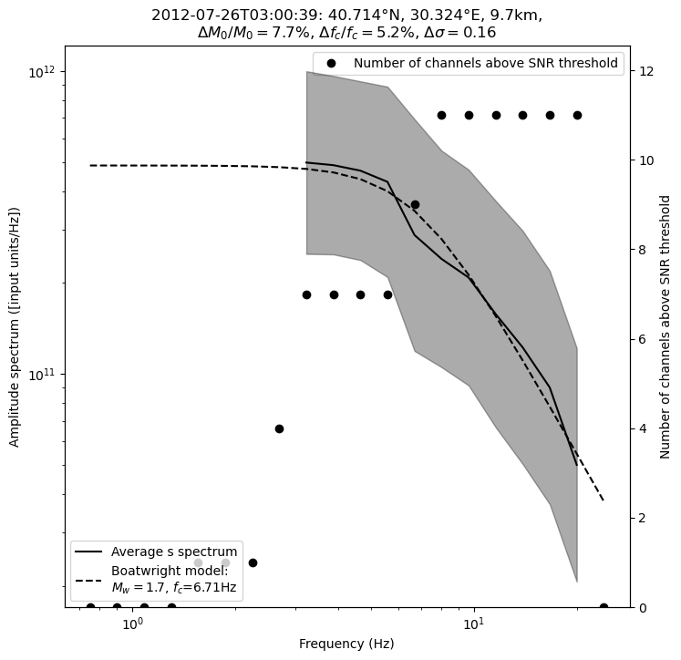
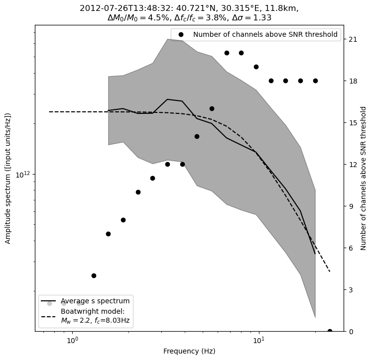
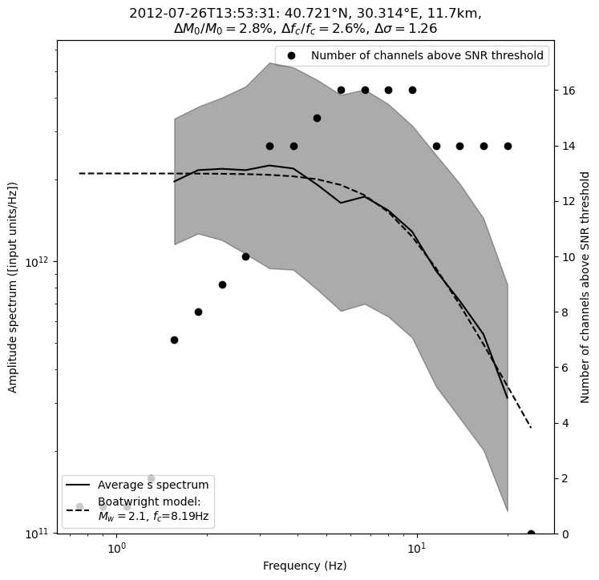
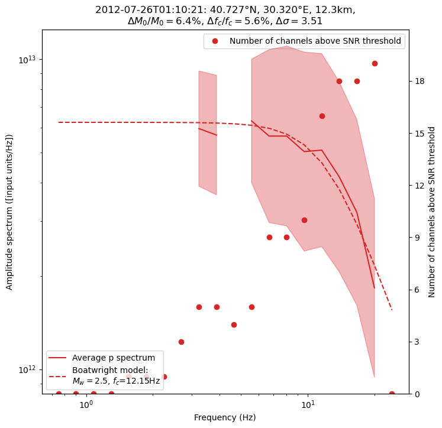
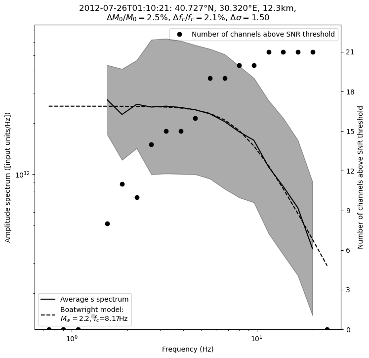
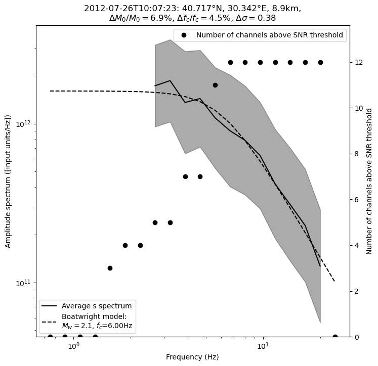
Magnitude distribution
Let’s now have a look at the distribution of earthquake magnitudes. We provide a few functions for building, modeling and plotting the distribution.
[74]:
def fM_distribution(M, Mmin=-1.0, Mmax=4.0, nbins=30, null_value=-10):
"""
Parameters
----------
M: numpy.ndarray
Magnitudes.
Mmin: scalar float, optional
Minimum magnitude in histogram. Default to -1.
Mmax: scalar float, optional
Maximum magnitude in histogram. Default to 4.
nbins: scalar int, optional
Number of bins in histogram. Default to 30.
null_value: scalar int or float, optional
Value indicating no data. Default to -10.
Returns
-------
count: numpy.ndarray
Number of earthquakes per magnitude bin.
cumulative_count: numpy.ndarray
"""
count, bins = np.histogram(
M[M != null_value],
range=(Mmin, Mmax),
bins=nbins,
)
mag_bins = (bins[1:] + bins[:-1]) / 2.0
# compute the cumulative magnitude distribution such that:
# f(M) = n >= M
count_for_descending_mag = count[::-1]
cumulative_count = np.cumsum(count_for_descending_mag)
# cumulative_count is given for descending magnitudes
# reverse its order to get it for ascending magnitudes
cumulative_count = cumulative_count[::-1]
return count, cumulative_count, mag_bins
def MLE_bvalue(
magnitudes,
Mmax_fit=5.0,
Mmin=-1.0,
Mmax=4.0,
nbins=30,
null_value=-10,
n_total_min=20,
n_above_Mc_min=10,
Mc_buffer=0.2,
kernel_smoothing_width=0.25
):
"""
Maximum Likelihood Estimate of the b-value.
Parameters
----------
magnitudes : numpy.ndarray
Magnitudes.
Mmax_fit : float, optional
Maximum magnitude included in the estimation of the b-value. Default is 5.0.
Mmin : float, optional
Minimum magnitude in histogram. Default is -1.0.
Mmax : float, optional
Maximum magnitude in histogram. Default is 4.0.
nbins : int, optional
Number of bins in histogram. Default is 30.
null_value : int or float, optional
Value indicating no data. Default is -10.
n_total_min : int, optional
Minimum number of magnitudes to estimate the b-value. Default is 50.
n_above_Mc_min : int, optional
Minimum number of magnitudes above the magnitude of completeness. Default is 30.
Mc_buffer : float, optional
Magnitude interval added to the estimated Mc, magnitude of completeness,
to increase the robustness of the estimation of b-value. Default is 0.2.
Returns
-------
GR : dict
A dictionary containing the following keys:
cumulative_count : numpy.ndarray
Cumulative number of earthquakes.
magnitude_bins : numpy.ndarray
Magnitude bins.
magnitudes : numpy.ndarray
Magnitudes.
Mc : float
Magnitude of completeness.
b : float
b-value of the Gutenberg-Richter distribution.
a : float
a-value of the Gutenberg-Richter distribution.
b_err : float
Error in the b-value estimation using Shi's method.
a_err : float
Error in the a-value estimation.
kde : scipy.stats.gaussian_kde
Gaussian kernel density estimate of the magnitude distribution.
Mmin : float
Minimum magnitude used in the histogram.
Mmax : float
Maximum magnitude used in the histogram.
Raises
------
Exception
If there is an error in the estimation of the magnitude of
completeness using the kernel density estimate.
Notes
-----
The b-value of the Gutenberg-Richter distribution is estimated using the
Maximum Likelihood Estimate (MLE) method [1]_. The a-value is estimated
using the method of descending order statistics [2]_.
References
----------
.. [1] Aki, K. (1965). Maximum likelihood estimate of b in the formula
log N = a − bM and its confidence limits. Bulletin of the Earthquake Research
Institute, 43, 237-239.
.. [2] Kanamori, H. (1977). The energy release in great earthquakes.
Journal of Geophysical Research: Solid Earth, 82(20), 2981-2987.
"""
from scipy.stats import gaussian_kde
# remove null values
magnitudes = magnitudes[magnitudes != null_value]
count, cumulative_count, magnitude_bins = fM_distribution(
magnitudes, Mmin=Mmin, Mmax=Mmax, nbins=nbins, null_value=null_value
)
# estimate pdf with gaussian kernels
# apply the maximum curvature method to the
# kde instead of the raw histogram
try:
kernel = gaussian_kde(magnitudes, bw_method=kernel_smoothing_width)
M_ = np.linspace(Mmin, Mmax, nbins)
Mc = M_[kernel(M_).argmax()] # + 0.2
except Exception as e:
print(e)
Mc = magnitude_bins[count.argmax()] # MAXC method
kernel = None
Mc_w_buffer = Mc + Mc_buffer
bin0 = np.where(magnitude_bins >= Mc_w_buffer)[0][0]
Mmax_fit = magnitudes.max()
m_above_Mc = magnitudes[magnitudes >= Mc_w_buffer]
n_total_mag = len(magnitudes)
if len(m_above_Mc) > n_above_Mc_min and n_total_mag > n_total_min:
# MLE b-value (Aki)
b = 1.0 / (np.log(10) * np.mean(m_above_Mc - Mc_w_buffer))
# Shi std err
b_err = (
2.3
* b**2
* np.sqrt(
np.mean((m_above_Mc - np.mean(m_above_Mc)) ** 2)
/ (len(m_above_Mc) - 1.0)
)
)
#bin0 = np.where(magnitude_bins >= Mc)[0][0]
#a = np.log10(cumulative_count[bin0]) + b * magnitude_bins[bin0]
descending_mag = np.sort(m_above_Mc)
cum_count = np.arange(1, 1 + len(m_above_Mc))
a = np.mean(np.log10(cum_count) + b*descending_mag)
a_err = np.std(np.log10(cum_count) + b*descending_mag)
else:
a, a_err, b, b_err, Mc = 5*[null_value]
# store everything in a dictionary
GR = {
"cumulative_count": cumulative_count,
"magnitude_bins": magnitude_bins,
"magnitudes": magnitudes,
"Mc": Mc,
"b": b,
"a": a,
"b_err": b_err,
"a_err": a_err,
"kde": kernel,
"Mmin": Mmin, # for plot_bvalue
"Mmax": Mmax, # for plot_bvalue
}
return GR
def plot_bvalue(GR, Mmin=None, Mmax=None, color="k", ax=None):
"""
Plot the frequency-magnitude distribution and the b-value fit for a given
Gutenberg-Richter relationship.
Parameters
----------
GR : dict
A dictionary containing the Gutenberg-Richter relationship parameters.
The dictionary must have the following keys:
- "magnitude_bins" : 1D array
Magnitude bins.
- "cumulative_count" : 1D array
Cumulative count of earthquakes with magnitude greater than or equal
to the corresponding magnitude bin.
- "magnitudes" : 1D array
Magnitudes of all earthquakes.
- "Mc" : float
Magnitude of completeness.
- "a" : float
Intercept of the Gutenberg-Richter relationship.
- "b" : float
Slope of the Gutenberg-Richter relationship.
- "b_err" : float
Standard error of the b-value estimate.
- "kde" : scipy.interpolate.interp1d object
Kernel density estimate of the magnitude distribution.
Mmin : float, optional
Minimum magnitude to consider in the distribution. If not given, it
defaults to GR["Mmin"].
Mmax : float, optional
Maximum magnitude to consider in the distribution. If not given, it
defaults to GR["Mmax"].
color : str, optional
Color to use for the plots. Defaults to "k" (black).
ax : matplotlib.axes.Axes, optional
Axes object to use for the plot. If not given, a new figure is created.
Returns
-------
fig : matplotlib.figure.Figure
The figure object containing the plot.
"""
if ax is None:
fig = plt.figure("freq_mag_distribution", figsize=(8, 8))
ax = fig.add_subplot(111)
else:
fig = ax.get_figure()
if Mmin is None:
Mmin = GR["Mmin"]
if Mmax is None:
Mmax = GR["Mmax"]
ax.set_title("Frequency-Magnitude distribution")
axb = ax.twinx()
mags_fit = np.linspace(
GR["Mc"], np.max(GR["magnitude_bins"][GR["cumulative_count"] != 0]), 20
)
ax.plot(
GR["magnitude_bins"],
GR["cumulative_count"],
marker="o",
ls="",
color=color
)
ax.plot(
mags_fit,
10 ** (GR["a"] - GR["b"] * mags_fit),
color=color,
label=f"b-value: {GR['b']:.2f}" r"$\pm$" f"{GR['b_err']:.2f}",
)
ax.plot(
GR["Mc"],
10 ** (GR["a"] - GR["b"] * GR["Mc"]),
marker="v",
color=color,
markersize=20,
markeredgecolor="k",
ls="",
label=r"$M_{c}$=" f"{GR['Mc']:.2f}",
)
axb.hist(
GR["magnitudes"],
range=(Mmin, Mmax),
bins=20,
color=color,
alpha=0.50,
density=True,
)
M_ = np.linspace(Mmin, Mmax, 40)
axb.plot(
M_,
GR["kde"](M_) / np.sum(GR["kde"](M_) * (M_[1] - M_[0])),
color=color,
ls="--",
)
dM = M_[1] - M_[0]
ax.set_xlabel(r"Magnitude, $M$")
ax.set_ylabel(r"Cumulative distribution: $n \geq M$")
ax.semilogy()
ax.legend(loc="upper right", handlelength=0.9)
axb.set_zorder(0.1)
axb.set_ylabel(r"Distribution: $\rho\left(M+dM \geq n \geq M\right)$")
ax.set_zorder(1.0)
ax.set_facecolor("none")
axb.set_ylim(0.0, 1.6)
return fig
[75]:
magnitudes = {
"Mw": [ev.aux_data["Mw"] for ev in events],
"Mw*": [ev.aux_data["Mw*"] for ev in events],
"event_id": [ev.id for ev in events]
}
magnitudes = pd.DataFrame(magnitudes)
magnitudes.set_index("event_id", inplace=True)
magnitudes
[75]:
| Mw | Mw* | |
|---|---|---|
| event_id | ||
| 20120726_011554.200000 | NaN | 1.531304 |
| 20120726_011630.080000 | NaN | 1.194269 |
| 20120726_011832.960000 | NaN | 1.203751 |
| 20120726_013955.400000 | NaN | 1.621345 |
| 20120726_015236.760000 | NaN | 1.330432 |
| 20120726_022436.320000 | NaN | 1.122385 |
| 20120726_030039.000000 | 1.725434 | 1.517212 |
| 20120726_010253.360000 | NaN | 1.206024 |
| 20120726_134832.480000 | 2.180491 | 2.104858 |
| 20120726_135018.560000 | NaN | 1.161246 |
| 20120726_135331.440000 | 2.148553 | 2.123206 |
| 20120726_010347.000000 | NaN | 1.212305 |
| 20120726_011021.800000 | 2.332186 | 2.101141 |
| 20120726_011232.960000 | NaN | 1.099897 |
| 20120726_011514.080000 | NaN | 1.393417 |
| 20120726_023501.560000 | NaN | 1.389194 |
| 20120726_013515.120000 | NaN | 0.996405 |
| 20120726_143850.440000 | NaN | 1.342168 |
| 20120726_044338.240000 | NaN | 1.276836 |
| 20120726_044649.160000 | NaN | 1.292793 |
| 20120726_044838.520000 | NaN | 1.331333 |
| 20120726_045106.520000 | NaN | 1.016187 |
| 20120726_015227.920000 | NaN | 1.217085 |
| 20120726_030833.640000 | NaN | 1.253922 |
| 20120726_031055.040000 | NaN | 1.153595 |
| 20120726_043033.520000 | NaN | 1.000092 |
| 20120726_052204.440000 | NaN | 1.266773 |
| 20120726_054546.000000 | NaN | 1.245254 |
| 20120726_054659.240000 | NaN | 1.211065 |
| 20120726_055716.440000 | NaN | 1.147745 |
| 20120726_080825.520000 | NaN | 1.941292 |
| 20120726_101645.760000 | NaN | 1.350648 |
| 20120726_105346.560000 | NaN | 1.195360 |
| 20120726_110223.560000 | NaN | 1.275262 |
| 20120726_092139.360000 | NaN | 1.983210 |
| 20120726_092848.320000 | NaN | 1.208550 |
| 20120726_100723.680000 | 2.070127 | 1.884484 |
| 20120726_162652.520000 | NaN | 1.306399 |
| 20120726_163357.640000 | NaN | 0.988949 |
| 20120726_115535.400000 | NaN | 1.183854 |
| 20120726_133526.920000 | NaN | 1.664720 |
| 20120726_005811.040000 | NaN | 1.177225 |
| 20120726_005816.600000 | NaN | 1.098913 |
| 20120726_022249.880000 | NaN | 0.983130 |
| 20120726_044503.920000 | NaN | 1.079569 |
| 20120726_135158.240000 | NaN | 1.735759 |
| 20120726_135454.160000 | NaN | 1.362262 |
| 20120726_135654.200000 | NaN | 1.381688 |
| 20120726_010925.920000 | NaN | 1.245361 |
| 20120726_011043.920000 | NaN | 1.899017 |
| 20120726_150619.960000 | NaN | 2.030446 |
| 20120726_172820.440000 | NaN | 1.226962 |
[76]:
GR = MLE_bvalue(magnitudes["Mw*"].values, )
[77]:
fig = plot_bvalue(GR)
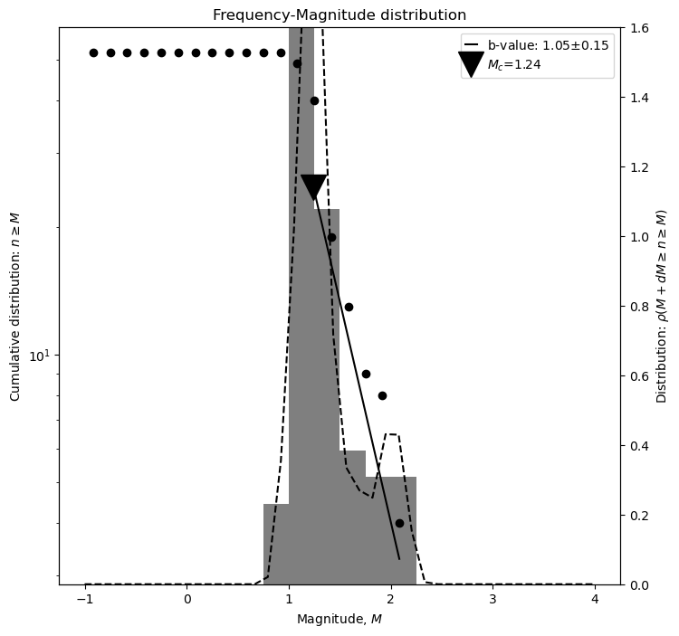
Of course, computing the Gutenberg-Richter b-value on a such a small catalog may not make sense at all. Nevertheless, the b-value \(b > 1\), for magnitudes \(M_{w^*} \sim 2/3 \log_{10} M_0\), is consistent with the extensional tectonic stress regime of this seismicity located in a pull-apart basin.
[78]:
BPMF.utils.donefun()
⠀⠀⠀⠀⠀⠀⠀⠀⠀⠀⠀⠀⠀⠀⠀⠀⠀⠀⠀⠀⠀⠀⠀⠀⠀⠀⠀
⠀⠀⠀⠀⠀⠀⢀⡤⣤⣀⠀⠀⠀⠀⠀⠀⠀⠀⠀⠀⣀⡀⠀⠀⠀⠀⠀⠀
⠀⠀⠀⠀⠀⢀⡏⠀⠀⠈⠳⣄⠀⠀⠀⠀⠀⣀⠴⠋⠉⠉⡆⠀⠀⠀⠀⠀
⠀⠀⠀⠀⠀⢸⠀⠀⠀⠀⠀⠈⠉⠉⠙⠓⠚⠁⠀⠀⠀⠀⣿⠀⠀⠀⠀⠀
⠀⠀⠀⠀⢀⠞⠀⠀⠀⠀⠀⠀⠀⠀⠀⠀⠀⠀⠀⠀⠀⠀⠹⣄⠀⠀⠀⠀
⠀⠀⠀⠀⡞⠀⠀⠀⠀⠀⠶⠀⠀⠀⠀⠀⠀⠦⠀⠀⠀⠀⠀⠸⡆⠀⠀⠀
⢠⣤⣶⣾⣧⣤⣤⣀⡀⠀⠀⠀⠀⠈⠀⠀⠀⢀⡤⠴⠶⠤⢤⡀⣧⣀⣀⠀
⠻⠶⣾⠁⠀⠀⠀⠀⠙⣆⠀⠀⠀⠀⠀⠀⣰⠋⠀⠀⠀⠀⠀⢹⣿⣭⣽⠇
⠀⠀⠙⠤⠴⢤⡤⠤⠤⠋⠉⠉⠉⠉⠉⠉⠉⠳⠖⠦⠤⠶⠦⠞⠁⠀⠀⠀
⠀ALL DONE!⠀⠀⠀